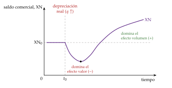
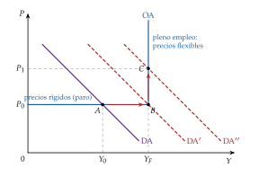
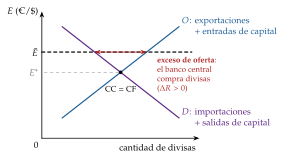
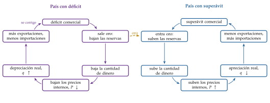
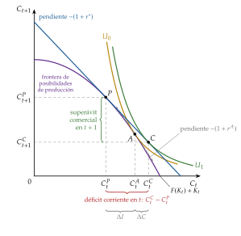
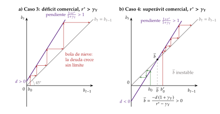
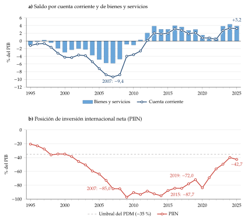

Tema 3.B.12
Mecanismos de ajuste de la balanza de pagos. Especial referencia al enfoque intertemporal de balanza de pagos. Análisis de sostenibilidad del déficit y de la deuda exterior.
Marshall-Lerner, curva J, multiplicador, absorción, enfoque monetario, modelo intertemporal de la cuenta corriente y sostenibilidad de la deuda exterior.
Exclusivo Material exclusivo de victorgutierrezmarcos.es y la app Oposición TCEE · DCE. Puedes usarlo libremente para tu estudio personal. No se autoriza su incorporación a otras plataformas, aplicaciones o servicios. Condiciones de uso.
Introducción
Enganche:
«De aquellos polvos, estos lodos», dice el refrán. En 2007 España tuvo un déficit por cuenta corriente del 9,4 % del PIB, el mayor de su serie, y el resto del mundo se lo financió sin pedir explicaciones (Banco de España, 2026a; Eurostat, 2026b).
Los lodos llegaron con la crisis: la financiación exterior se cortó y España, dentro del euro, no podía devaluar. Tuvo que ajustar por otras vías, con la renta, el gasto y los precios y salarios. Desde 2012 tiene superávit por cuenta corriente: el 3,2 % del PIB en 2025 (Banco de España, 2026a).
Detrás hay 3 preguntas, que son las del título de esta exposición: ¿cómo se corrige un desequilibrio exterior?, ¿era malo aquel déficit o la decisión razonable de un país que invertía?, ¿y hasta cuándo se puede financiar?
Relevancia:
Los desequilibrios exteriores que no se corrigen a tiempo acaban en crisis de balanza de pagos, con ajustes bruscos que recaen sobre la producción y el empleo: América Latina en los 80, Asia en 1997, la periferia del euro en 2010-2012 (Catão y Milesi-Ferretti, 2014) [ver tema 3.B.17].
Por eso el saldo exterior y la posición de inversión internacional están en el centro de la supervisión del Fondo Monetario Internacional (FMI) [ver tema 3.B.22] y del procedimiento de desequilibrios macroeconómicos de la UE [ver tema 3.B.45].
Y la pregunta de quién debe ajustar, el deudor o el acreedor, sigue abierta desde Bretton Woods, donde John Maynard Keynes propuso que ajustaran los 2 (Keynes, 1943) [ver tema 3.B.19].
Contextualización:
La balanza de pagos registra las transacciones entre residentes y no residentes durante un periodo. Por la partida doble siempre cuadra, pero sus cuentas no tienen por qué estar equilibradas [ver tema 3.B.11].
Un desequilibrio exterior es un saldo de la cuenta corriente (o de la balanza básica, o del saldo global, según la época) que no se puede mantener sin perder reservas, recurrir a financiación excepcional o hacer un ajuste brusco. El equilibrio externo es, al revés, un saldo corriente que no pone en peligro la sostenibilidad exterior: la capacidad del país de hacer frente a sus obligaciones con el exterior en el futuro.
Un mecanismo de ajuste es el proceso, automático o inducido por la política económica, que corrige ese desequilibrio: a través de los precios relativos y el tipo de cambio, de la renta, de las reservas y la cantidad de dinero, o de los flujos de capital.
La evolución de las ideas:
Las teorías del ajuste nacieron con tipos de cambio fijos y poco capital móvil, porque con tipo flexible y sin capitales el tipo de cambio equilibraría por sí solo la cuenta corriente [ver tema 3.B.13]. Durante décadas, un déficit se veía como algo preocupante que había que corregir.
Desde los 70, con la liberalización de los capitales, el foco pasa de los flujos de bienes a los stocks de activos.
En los 80 llega el enfoque intertemporal, que ve la cuenta corriente como el resultado de decisiones óptimas de ahorro e inversión. Lo preocupante deja de ser el déficit en sí y pasa a ser su sostenibilidad.
Convención: \(E\) es el tipo de cambio nominal directo (unidades de moneda nacional por unidad de divisa), de modo que una subida de \(E\) es una depreciación, y \(q\equiv EP^*/P\) es el tipo de cambio real (una subida de \(q\) es una depreciación real) [ver tema 3.B.13].
Problemática:
¿Se corrigen solos los desequilibrios exteriores? ¿A través de qué variables: los precios relativos, la renta, las reservas o el capital?
¿Es malo un déficit por cuenta corriente? ¿Quién debe prestar y quién pedir prestado?
¿Cuándo es sostenible un déficit, y qué deuda exterior puede soportar un país?
Estructura:
La exposición va de los flujos a los stocks y de los stocks a la elección intertemporal; cada enfoque relaja un supuesto del anterior.
En el bloque I, los mecanismos basados en el tipo de cambio y la renta: los enfoques keynesianos de las elasticidades, el multiplicador y la absorción, y, con capital móvil, el modelo IS-LM-BP.
En el bloque II, los basados en las reservas: el flujo-especie, su antecedente más antiguo, y los enfoques monetario y de cartera.
En el bloque III, el enfoque intertemporal, que pregunta si hay que ajustar, y el análisis de sostenibilidad, que pone el límite a la respuesta.
3.B.12. Mecanismos de ajuste de la balanza de pagos. Especial referencia al enfoque intertemporal de balanza de pagos. Análisis de sostenibilidad del déficit y de la deuda exterior
Introducción2′30″
I. Mecanismos de ajuste basados en el tipo de cambio y la renta: enfoques keynesianos10′
1. El enfoque de las elasticidades y la condición de Marshall-Lerner
2. El enfoque del multiplicador
3. El enfoque de la absorción
4. Con movilidad del capital y tipo flexible: IS-LM-BP y asignación de Mundell
II. Mecanismos de ajuste basados en las reservas: enfoques de stocks5′
1. El mecanismo flujo-especie
2. El enfoque monetario de la balanza de pagos
3. El enfoque de cartera
III. El enfoque intertemporal de la balanza de pagos y la sostenibilidad exterior11′30″
1. Del ajuste a la elección: la idea del enfoque intertemporal
2. El modelo de 2 periodos
3. Valoración y extensiones del enfoque intertemporal
4. Análisis de sostenibilidad del déficit y de la deuda exterior
Conclusión1′
Reparto del cante: introducción, 2′30″; I, 10′ (I.1, 4′; I.2, 1′30″; I.3, 2′30″; I.4, 2′); II, 5′ (II.1, 2′; II.2, 2′; II.3, 1′); III, 11′30″ (III.1, 1′; III.2, 4′; III.3, 1′30″; III.4, 5′), y conclusión, 1′. Los modelos antiguos (bloques I y II) se cuentan deprisa y el peso va al enfoque intertemporal y a la sostenibilidad. Conviene decir al empezar la convención del tipo de cambio (directo: si sube, se deprecia la moneda): así el tribunal sigue sin dudas los signos de las elasticidades y de los desplazamientos. España vuelve como ejemplo en la absorción, en el modelo intertemporal y en la sostenibilidad, y el refrán del enganche cierra la idea final. Las notas al pie, las cajas grises y los anexos son para las preguntas del tribunal.
I. Mecanismos de ajuste basados en el tipo de cambio y la renta: enfoques keynesianos
En el cante (10′): las elasticidades con la condición de Marshall-Lerner, la curva J y el traspaso (4′); el multiplicador, de palabra y con una sola ecuación (1′30″); la absorción con su ecuación, los 2 efectos y las 2 políticas de Johnson (2′30″); el IS-LM-BP, la asignación de Mundell y el tipo flexible, de palabra (2′). Las derivaciones completas y los casos del multiplicador son de profundización.
Empezamos por los enfoques que miran los flujos de bienes y servicios: cómo se corrige el saldo comercial cuando cambian los precios relativos o la renta.
Conclusión anticipada:
Con precios rígidos y capital inmóvil, una devaluación mejora el saldo solo si las cantidades reaccionan lo suficiente (la condición de Marshall-Lerner), y a corto plazo puede empeorarlo.
El ajuste por la renta es incompleto.
Con pleno empleo, la devaluación solo funciona si se reduce el gasto interior.
Con capital móvil, el régimen cambiario decide qué variable hace el ajuste, y la política económica tiene que repartir sus instrumentos.
I.1. El enfoque de las elasticidades y la condición de Marshall-Lerner
a) Idea
Tras la Primera Guerra Mundial, la vuelta al patrón oro puso en duda el ajuste automático del flujo-especie, el mecanismo de David Hume que se estudia con los enfoques de stocks (II.1).
Keynes se opuso a que la libra volviera al oro con la paridad de antes de la guerra, porque obligaba a un país con déficit como el Reino Unido a bajar precios y salarios, algo políticamente inviable con unos sindicatos cada vez más organizados (Keynes, 1925).
De ahí su defensa de que el Estado buscara a la vez el equilibrio interno y el externo, y de que, para el externo, pudiera ser mejor devaluar el tipo de cambio nominal que forzar una devaluación interna. La idea siguió viva con los tipos fijos pero ajustables y la escasa movilidad del capital de Bretton Woods.
Gana fuerza así la idea de que el ajuste puede requerir medidas explícitas de política económica, sobre todo devaluaciones. Pero las devaluaciones sucesivas de los años 30 no dieron el resultado esperado, y la teoría se preguntó qué condiciones tienen que cumplirse para que una devaluación mejore la balanza.
Las formularon por separado Robinson (1937) y Lerner (1944, cap. 28), a partir de Marshall (1923).1
Una depreciación tiene 2 efectos de signo contrario sobre el saldo comercial:
el efecto valor (o precio), negativo: cada unidad importada cuesta más en moneda nacional;
el efecto volumen, positivo: se exporta más y se importa menos, porque lo nacional se abarata frente a lo extranjero.
La depreciación mejora el saldo si el efecto volumen supera al efecto valor, es decir, si las exportaciones y las importaciones son lo bastante sensibles al tipo de cambio real.
b) Modelo
i) Supuestos
Precios fijos en la moneda del productor: el precio de lo nacional, \(P\), está fijo en moneda nacional y el de lo extranjero, \(P^*\), en divisas. Una devaluación nominal es, por tanto, una depreciación real.
Recursos ociosos: la producción se adapta a la demanda. Las ofertas de exportaciones y de importaciones son infinitamente elásticas, y las cantidades las fijan las demandas.
Equilibrio parcial: el dinero y los capitales quedan en segundo plano y la balanza de pagos se reduce a la balanza comercial. La política monetaria está aislada del exterior, porque hay controles de capital o porque se esterilizan los movimientos de reservas.
País pequeño en las importaciones, con algo de poder en las exportaciones: su demanda de exportaciones tiene pendiente negativa.
Comercio inicialmente equilibrado.
ii) Desarrollo
Con \(X(q)\) y \(M(q)\) los volúmenes exportado e importado, el saldo comercial en unidades del bien nacional es \[\tag{1} \mathrm{XN}=X(q)-q\,M(q),\qquad q\equiv\frac{E\,P^*}{P}.\] Con estos supuestos, \(q\) es también la relación entre el precio de las importaciones y el de las exportaciones multiplicada por \(E\).
Derivando respecto a \(q\), con las elasticidades al tipo real con su signo, \(\varepsilon_{X,q}\equiv\frac{\mathrm dX}{\mathrm dq}\frac{q}{X}>0\) y \(\varepsilon_{M,q}\equiv\frac{\mathrm dM}{\mathrm dq}\frac{q}{M}<0\): \[\tag{2} \frac{\mathrm d\,\mathrm{XN}}{\mathrm dq}=M\left(\frac{X}{q\,M}\,\varepsilon_{X,q}-\varepsilon_{M,q}-1\right).\]
Con comercio equilibrado, \(X=q\,M\), la depreciación mejora el saldo si y solo si se cumple la condición de Marshall-Lerner:
\[\frac{\mathrm d\,\mathrm{XN}}{\mathrm dq}>0\iff\lvert\varepsilon_{X,q}\rvert+\lvert\varepsilon_{M,q}\rvert>1\tag{3}\]
En palabras: la suma de los valores absolutos de las elasticidades de las demandas de exportaciones y de importaciones al tipo de cambio real tiene que superar a 1. Solo entonces el efecto volumen compensa el encarecimiento de lo que ya se importaba.
Vista desde el mercado de divisas: con elasticidades bajas, la oferta de divisas tiene un tramo decreciente (una depreciación reduce el valor en divisas de lo exportado), y el mercado de divisas puede ser inestable [ver tema 3.B.13].
iii) Implicaciones
Si se cumple (3), una devaluación corrige un déficit comercial: aumenta mucho las exportaciones y reduce mucho las importaciones.
Las elasticidades dependen de:
la estructura de los mercados de exportación: cuanto más cerca de la competencia perfecta, más elástica es la demanda de las exportaciones de cada país;
la diferenciación de las exportaciones: cuanto más diferenciadas, menos elásticas;
la sustituibilidad de las importaciones: cuanto más fácil es sustituirlas por producción nacional, más elástica es su demanda;
el plazo: a largo plazo las cantidades reaccionan más.
Si no se cumple, aparece la paradoja de las elasticidades: si con elasticidades bajas una devaluación empeora el saldo, sería una apreciación la que lo mejoraría.
c) Extensiones
Con déficit inicial (\(X<q\,M\)), que es lo habitual cuando se devalúa, la condición en moneda nacional es más exigente: \[\tag{4} \frac{X}{q\,M}\,\lvert\varepsilon_{X,q}\rvert+\lvert\varepsilon_{M,q}\rvert>1 ,\] porque la elasticidad de las exportaciones se multiplica por un número menor que 1: con un déficit grande, la condición puede fallar aunque la suma de las elasticidades supere a 1.
En divisas la condición es menos exigente: \(\lvert\varepsilon_{X,q}\rvert+\frac{q\,M}{X}\lvert\varepsilon_{M,q}\rvert>1\). Con déficit y la suma de las elasticidades igual a 1, una depreciación mejoraría el saldo en divisas y lo empeoraría en moneda nacional:2 hay que decir siempre en qué moneda se mide (anexo A).
Con ofertas finitas (condición de Bickerdike-Robinson-Metzler) la condición es menos exigente que (3), porque parte de la depreciación la absorben los precios de oferta (anexo A).
d) Evidencia empírica
Pesimismo y optimismo de las elasticidades: las estimaciones de los años 30 y 40 daban elasticidades muy bajas y alimentaron el pesimismo; los optimistas sostenían lo contrario.
El debate no se resolvió con datos, y no es raro: eran ecuaciones de equilibrio parcial, que ignoraban la simultaneidad entre la renta, los precios y el comercio, y sesgaban a la baja las elasticidades (Gandolfo, 2016, cap. 7).
Con métodos de cointegración, Hooper, Johnson y Marquez (2000) estiman las elasticidades a largo plazo de los países del G-7 y concluyen que, salvo en Francia y Alemania, cumplen la condición de Marshall-Lerner.3
La evidencia reciente confirma que el tipo de cambio sigue importando: con datos de más de 50 economías, el FMI estima que una depreciación real efectiva del 10 % eleva de media las exportaciones netas reales en 1,5 puntos del PIB, buena parte en el primer año (Fondo Monetario Internacional, 2015).
e) Valoración
La curva J: a corto plazo los volúmenes apenas cambian, porque hay contratos firmados y cambiar de proveedor lleva tiempo, y domina el efecto valor. El saldo empeora antes de mejorar (Magee, 1973).
Con el comercio facturado en dólares (dominant currency pricing), la depreciación encarece enseguida las importaciones pero apenas abarata las exportaciones a corto plazo, y la J es más profunda (Gopinath et al., 2020).

Fuente: Elaboración propia a partir de Magee (1973). Tras la depreciación, el saldo empeora mientras domina el efecto valor y mejora cuando las cantidades reaccionan.
El traspaso (pass-through) tiene 2 sentidos que conviene distinguir:
a los precios de exportación en divisas: si los exportadores aprovechan la depreciación para subir sus márgenes en moneda nacional, el precio en divisas baja menos y el efecto volumen es menor. El traspaso es mayor cuanto menos poder de mercado tienen los exportadores y cuanto más duradera se cree que es la depreciación (si se cree temporal, no compensa pagar los costes de cambiar los precios);
a los precios interiores, primero a los de importación y después al IPC: si la depreciación pasa a los precios y a los salarios, el tipo de cambio real vuelve a apreciarse (si \(P\) sube tanto como \(E\), \(q=EP^*/P\) no cambia). Es mayor con inflación alta y poco creíble, mucho peso de las importaciones y salarios indexados (Taylor, 2000; Campa y Goldberg, 2005; Burstein y Gopinath, 2014) [ver tema 3.A.37].
Los precios fijos: el enfoque supone que una devaluación nominal es real. Si la devaluación genera inflación, algo frecuente en la práctica, el tipo de cambio real puede incluso apreciarse.
Las reacciones del resto del mundo: la devaluación funciona si los demás no la imitan. Es una política de empobrecimiento del vecino, y las devaluaciones competitivas de entreguerras se anularon unas a otras [ver tema 3.B.20].
El equilibrio parcial: el enfoque no tiene en cuenta que la mejora del saldo eleva la renta y, con ella, las importaciones. Es lo que añade el enfoque del multiplicador.
Una explicación del FMI sobre el tipo de cambio, el comercio y la facturación en dólares, en vídeo: Analyze This! Exchange Rates and Trade with Gita Gopinath, https://youtu.
be/ (Fondo Monetario Internacional, 2019).aApyiK- dDtc Un ejemplo del traspaso a los precios interiores, el de Argentina: Álvarez (2022).
I.2. El enfoque del multiplicador
El multiplicador se cuenta de palabra, como una extensión de las elasticidades que añade los efectos sobre la renta: basta con la ecuación (6) y la idea de que el ajuste es incompleto.
a) Idea
Harrod (1933) introduce el multiplicador del comercio exterior, antes de que Keynes hiciera del multiplicador una pieza de la Teoría general4, y Machlup (1943) lo desarrolla. La pregunta: ¿corrige la renta un desequilibrio comercial cuando los precios y el tipo de cambio están fijos?
El enfoque importa por 2 motivos:
es la contrapartida, también de equilibrio parcial, del análisis basado solo en el tipo de cambio, y el primer paso para integrar los 2 mecanismos;5
vale por sí mismo cuando el tipo de cambio y los precios son rígidos.
b) Modelo
i) Supuestos
Modelo keynesiano de economía abierta: recursos ociosos y precios, tipo de cambio y tipo de interés rígidos. La producción se ajusta al exceso de demanda, venga de donde venga.
Sin movimientos de capital: la balanza de pagos es la balanza comercial.
País pequeño: lo que pasa en el país no afecta a la renta del resto del mundo, de modo que sus exportaciones, \(\overline X\), son exógenas.
ii) Desarrollo
Con \(\overline A\equiv\overline C+\overline I+\overline G\) el gasto autónomo, \(c\) la propensión marginal a consumir, \(z\) la propensión marginal a invertir (la inversión inducida por la renta, local de este tema), \(b\) la sensibilidad de la inversión al tipo de interés y \(m\) la propensión marginal a importar, el equilibrio del mercado de bienes es \[\tag{5} Y=\overline A-b\,i+(c+z)\,Y+\overline X-\left(\overline M+m\,Y\right)\quad\Longrightarrow\quad Y=\frac{\overline A-b\,i+\overline X-\overline M}{1-c-z+m},\] con \(1-c-z+m>0\). Es el multiplicador sin impuestos; con ellos, \(c\) pasa a ser \(c\,(1-t)\), como en el modelo de Mundell-Fleming [ver tema 3.A.32].
El multiplicador abierto es menor que el cerrado: parte del gasto se va en importaciones.
El saldo comercial cambia por lo exógeno y por las importaciones inducidas por la renta, \(m\,\Delta Y\). Con el gasto autónomo interior y el tipo de interés constantes: \[\tag{6} \Delta\mathrm{XN}=\left(\Delta\overline X-\Delta\overline M\right)\frac{1-c-z}{1-c-z+m}.\]
iii) Implicaciones
Un aumento autónomo de las exportaciones eleva la renta, y con ella las importaciones. Si la propensión marginal a gastar es menor que 1 (\(c+z<1\)), el ajuste por la renta es incompleto: el saldo mejora, pero menos que el aumento inicial de las exportaciones, \(0<\Delta\mathrm{XN}<\Delta\overline X\).
Si \(c+z>1\), las importaciones inducidas superan al aumento de las exportaciones y aparece un déficit: con más propensión a gastar, el multiplicador es mayor y la renta tira más de las importaciones. Es un caso poco realista.
Un aumento autónomo de las importaciones tiene 2 lecturas:
si sustituye a gasto en bienes nacionales, la renta baja y el saldo empeora en \(\Delta\overline M\,(1-c-z)/(1-c-z+m)\), menos que el aumento inicial;
si se suma al gasto interior sin reducir el de bienes nacionales, la renta no cambia y el saldo empeora en todo \(\Delta\overline M\): no hay ajuste.
Los casos, paso a paso, en el anexo B.
c) Evidencia empírica
Podría pensarse que el multiplicador está superado: la transmisión de la política fiscal se analiza hoy con modelos econométricos de varios países enlazados por sus sectores exteriores.
Sin embargo, Deardorff y Stern (1979) compararon las simulaciones fiscales de varios modelos enlazados con las de un multiplicador sencillo como (5), y los resultados del multiplicador caían casi siempre dentro del rango de los modelos. Ferrara y Rotondi (1989) repitieron el ejercicio con otros periodos y resultados parecidos (Gandolfo, 2016, cap. 8).
En palabras: el multiplicador abierto sigue siendo útil para una primera idea de la transmisión internacional de la política fiscal.
d) Valoración
Equilibrio parcial: falta el mercado de dinero. Con una LM, \(M/P=k\,Y-h\,i\), donde \(k\) es la sensibilidad de la demanda de dinero a la renta y \(h\) al tipo de interés, la mayor renta sube el tipo de interés y frena la inversión [ver tema 3.A.32].
El efecto renta es menor, y la devaluación mejora más el saldo, cuanto más sensible es la inversión al tipo de interés (\(b\)) y cuanto mayor es \(k\).
Es mayor, y la devaluación mejora menos el saldo, cuanto mayor es \(h\): con una LM plana, cerca de la trampa de la liquidez, el efecto renta es máximo.
País pequeño: ignora la repercusión sobre el resto del mundo. Con 2 países, la depreciación que mejora el saldo de uno baja la renta del otro, que le compra menos. El signo del efecto lo sigue dando la condición de Marshall-Lerner, pero la mejora es menor: los efectos renta frenan el ajuste (anexo B).
No da una condición sobre la depreciación: solo dice qué parte de una mejora de las exportaciones netas llega al saldo. Harberger (1950) y Laursen y Metzler (1950) unieron las elasticidades y la renta con 2 países grandes: la depreciación empeora la relación real de intercambio y reduce la renta real; si el ahorro cae y la absorción baja menos que la renta, y la condición sobre las elasticidades se vuelve más exigente. Es el efecto Harberger-Laursen-Metzler, que el enfoque intertemporal revisará (III.3).
I.3. El enfoque de la absorción
a) Idea
El multiplicador supone recursos ociosos, de modo que la producción puede crecer. Alexander (1952) escribe a principios de los 50, en la «edad dorada», cuando lo realista es el pleno empleo, y estudia el ajuste cuando la producción no puede aumentar.6
Con pleno empleo, la mayor demanda de exportaciones no se puede atender con los recursos disponibles: suben los precios y el tipo de cambio real se aprecia, lo que limita la eficacia de la devaluación. Para que funcione, tiene que mover otras variables.
b) Modelo
i) Supuestos
Los del multiplicador, pero con la posibilidad de pleno empleo: los precios son rígidos mientras hay paro y flexibles en el pleno empleo, con una oferta agregada en forma de L invertida (gráfico 2).
ii) Desarrollo
La absorción, \(A\equiv C+I+G\), es el gasto interior, incluido el que va a importaciones. Como \(Y=A+\mathrm{XN}\),
\[\mathrm{XN}=Y-A\tag{7}\]
el saldo exterior mejora solo si la renta sube más que la absorción: hay déficit cuando el país gasta más de lo que produce. Es la identidad \(\mathrm{CC}=S-I\) leída como teoría [ver tema 3.B.11].

Para mejorar el saldo hay 2 vías: aumentar la renta (más productividad, más factores) o reducir la absorción (por ejemplo, con una política fiscal contractiva).
Con \(A=\overline A-b\,i+(c+z)\,Y\), donde \(c+z\) es la propensión marginal a absorber, el saldo es \(\mathrm{XN}=\left[1-(c+z)\right]Y-\left(\overline A-b\,i\right)\), y una devaluación lo cambia en \[\tag{8} \mathrm d\,\mathrm{XN}=\underbrace{\left[1-(c+z)\right]\mathrm dY}_{\text{efecto renta}}\;-\;\underbrace{\mathrm d\left(\overline A-b\,i\right)}_{\text{efecto directo sobre la absorción}} .\]
El efecto renta:
con recursos ociosos, la mayor demanda de bienes nacionales eleva la producción, y el saldo mejora en la parte de esa renta que no se absorbe. Si la propensión a absorber está cerca de 1, como creía Alexander, apenas mejora;
con pleno empleo, la producción no cambia y el efecto es nulo, salvo que la devaluación corrija un tipo de cambio desalineado o mejore la relación real de intercambio de un país con poder sobre sus precios de importación.
El efecto directo sobre la absorción: con pleno empleo, la devaluación sube los precios7, y la subida reduce la absorción por varios mecanismos (Alexander, 1952):
el efecto saldos reales (Pigou-Patinkin): los saldos monetarios pierden valor real y, para reponerlos, se ahorra más y se consume menos [ver tema 3.A.5];
el efecto Keynes: con menos saldos reales, \(M/P\), hay exceso de demanda de dinero, sube el tipo de interés y cae la inversión;
la redistribución hacia el sector público: la inflación reduce el valor real de la deuda pública y eleva la recaudación por la progresividad en frío;8 si el sector público no gasta más, la absorción cae;
la redistribución de los salarios a los beneficios, si los salarios no están indexados y los perceptores de beneficios ahorran más;
la ilusión monetaria, si los agentes reaccionan a los precios y no a su renta real.
Estos mecanismos llegan íntegros al saldo solo con pleno empleo. Lejos de él, depende de qué parte de la menor absorción recae sobre la producción nacional.
iii) Implicaciones
El ajuste depende de si hay pleno empleo: hay que tenerlo en cuenta para prever los efectos de una devaluación.
Una devaluación sola puede no bastar: con pleno empleo hay que acompañarla de políticas que reduzcan el gasto (fiscal y monetaria contractivas), mientras la devaluación desvía el gasto hacia lo nacional (Johnson, 1958). La combinación depende del empleo y de las características del país (propensión a absorber, indexación de los salarios, efectos inflacionistas de la devaluación).
Es la base de los programas de ajuste del FMI, que combinan devaluación, contención de la absorción y reformas [ver tema 3.B.22].
Volvamos a España. Dentro del euro no podía devaluar, y el ajuste de 2008-2013 vino por las 2 vías de Johnson sin tipo de cambio: la absorción se hundió (reducción del gasto) y los precios y salarios crecieron menos que los de los socios (una devaluación interna, que desvía el gasto) (Banco de España, 2026a) [ver tema 3.B.16].
c) Valoración
En los 50 hubo un intenso debate entre la absorción y las elasticidades, que acabó en una síntesis pobre: tomar el efecto de la devaluación como un cambio exógeno del saldo y aplicarle un multiplicador.
Nadie entonces, ni su autor, pareció ver lo verdaderamente nuevo del enfoque: son los determinantes macroeconómicos de la absorción (las decisiones de ahorro e inversión) los que, en último término, deciden el saldo exterior. Es la intuición que desarrollará el enfoque intertemporal (III).
No presta atención a los flujos financieros que financian el saldo: se pensó cuando los capitales apenas se movían.
I.4. Con movilidad del capital y tipo flexible: IS-LM-BP y asignación de Mundell
a) Idea
Una vez vistos los enfoques que solo miran el comercio, pasamos al que añade los movimientos de capital: el modelo de Mundell-Fleming (Fleming, 1962; Mundell, 1963), que tiene su desarrollo propio [ver tema 3.A.32]. Aquí interesa como mecanismo de ajuste.
Conclusión anticipada: cuando el capital se mueve, el régimen cambiario decide qué variable hace el ajuste (las reservas con tipo fijo, el tipo de cambio con flexible), y la política económica tiene que repartir sus instrumentos.
b) Modelo
i) Supuestos
Los de los enfoques keynesianos (precios fijos, recursos ociosos y la condición de Marshall-Lerner), en un país pequeño con expectativas estáticas sobre el tipo de cambio.
Los flujos de capital responden al diferencial de tipos de interés: la cuenta financiera neta es \(\beta_K\,(i-i^*)\), con \(\beta_K\) la movilidad del capital (lleva subíndice porque \(\beta\) es el factor de descuento del bloque III).
ii) Desarrollo
La curva BP recoge las combinaciones de renta y tipo de interés con la balanza de pagos en equilibrio, sin variación de reservas: \[\tag{9} \underbrace{x\,Y^*-m\,Y+\nu\,q}_{\text{saldo comercial}}+\underbrace{\beta_K\,(i-i^*)}_{\text{cuenta financiera neta}}=0 ,\] con \(x\) la propensión a exportar y \(\nu\) la sensibilidad del saldo comercial al tipo real (positiva si se cumple (3)). Por encima de la BP hay superávit; por debajo, déficit. Es más plana cuanto mayor es la movilidad (gráfico 3).

Con tipo fijo, el ajuste lo hacen las reservas: un déficit hace perder reservas, baja la cantidad de dinero (\(M=\mathrm{CI}+R\)) y la LM se desplaza hasta cerrar el déficit. Cuanto mayor es la movilidad, más rápido; con movilidad perfecta, la política monetaria solo cambia las reservas. Es el enfoque monetario del bloque II, ahora con la renta variable.
Con tipo flexible, el ajuste lo hace el tipo de cambio: el déficit deprecia la moneda, la IS y la BP se desplazan y la balanza de pagos se equilibra sin mover las reservas.
iii) Implicaciones
2 objetivos, 2 instrumentos: Meade (1951) planteó el conflicto entre el equilibrio interno (pleno empleo sin inflación) y el externo, y Tinbergen (1952) mostró que hacen falta tantos instrumentos como objetivos.
Mundell (1960) formuló el principio de la clasificación eficaz de los mercados: cada instrumento se asigna al objetivo sobre el que tiene más influencia relativa. Con la asignación al revés, cada corrección aleja a la economía del otro objetivo y el sistema es inestable (Boughton, 2003).
La asignación de Mundell: con tipo fijo y capital móvil, las 2 políticas suben la renta, pero la monetaria expansiva baja el tipo de interés y saca capital, y la fiscal expansiva lo sube y lo atrae. Por eso Mundell (1962) asigna la política monetaria al equilibrio externo y la fiscal al interno.
Qué régimen elegir depende de este reparto y de la movilidad del capital: con tipo fijo y libertad de capitales se renuncia a la política monetaria propia (el trilema) [ver tema 3.B.15].
c) Valoración
¿Resuelve el tipo flexible el problema del ajuste? Friedman (1953) defendió el tipo flexible: ante una perturbación se mueve un solo precio, el tipo de cambio, en lugar de todos los precios y salarios, la economía queda aislada de las perturbaciones de demanda del exterior y el país recupera su política monetaria.
Sin movimientos de capital, el tipo flexible equilibra la cuenta corriente: es el tipo que vacía el mercado de divisas; con tipo fijo, la diferencia entre la oferta y la demanda de divisas la cubren las reservas (gráfico 4) [ver tema 3.B.13].

Fuente: Elaboración propia a partir de P. R. Krugman, Obstfeld y Melitz (2022). Con tipo flexible, el tipo de vaciado iguala la oferta y la demanda de divisas; con un tipo fijo por encima, hay exceso de oferta y el banco central compra divisas.
Pero el tipo flexible no garantiza el ajuste:
la depreciación nominal tiene que ser real: si se traslada a los precios interiores, la competitividad no cambia;
tiene que cumplirse (3), y con el comercio facturado en dólares el efecto volumen es pequeño a corto plazo (Gopinath et al., 2020);
con capital móvil, el tipo de cambio lo mueven sobre todo los flujos financieros, que pueden financiar durante años un déficit corriente o apreciar la moneda de un país con déficit; y si la deuda está en divisas, la depreciación la encarece.
Por eso con tipos flexibles ha habido desequilibrios corrientes grandes y persistentes, como el de Estados Unidos desde los 80 [ver tema 3.B.11]. La respuesta completa a si el tipo flexible resuelve el ajuste, en el anexo E.
Recapitulando: los enfoques keynesianos ajustan el saldo comercial con los precios relativos y la renta. La devaluación funciona si se cumplen las elasticidades, tarde (la curva J) y, con pleno empleo, solo si se reduce la absorción; con capital móvil, el régimen cambiario decide qué se ajusta.
Todos miran los flujos de bienes. Con la liberalización de los capitales, el desequilibrio pasa a leerse desde los mercados de activos: es lo que hacen los enfoques de stocks.
II. Mecanismos de ajuste basados en las reservas: enfoques de stocks
En el cante (5′): el flujo-especie con su circuito, las reglas del juego y la asimetría (2′); el enfoque monetario con su ecuación y sus 3 implicaciones (2′); la cartera, de palabra (1′). La tabla de los mecanismos se resume en la recapitulación.
Hasta los 70 se aceptaba que un desequilibrio exterior nacía en la cuenta corriente. Con la liberalización de los capitales, cada vez se ve en ellos su causa profunda.
Es el enfoque de la balanza de pagos «cabeza abajo»: en lugar de mirar la cuenta corriente y ver la financiera como su consecuencia, se hace al revés. Los desequilibrios nacen en los mercados de activos, y los de las demás cuentas son su reflejo.
Así, un superávit corriente se explicaría más por el deseo de ahorrar que por la atonía del consumo.
La balanza de pagos pasa a ser un fenómeno monetario y financiero, que se estudia con la teoría monetaria y no con la del comercio.
Por ejemplo, Tailandia tuvo un déficit corriente de en torno al 8 % del PIB en 1995 y 1996, financiado con una entrada masiva de capital a corto plazo, antes de la crisis asiática de 1997 (Fondo Monetario Internacional, 1997) [ver tema 3.B.17].
Conclusión anticipada: con tipo fijo, el ajuste lo hacen las reservas y es automático. El banco central no controla la cantidad de dinero: lo que crea de más se va por la balanza de pagos. Si los activos no son sustitutos perfectos, el ajuste es parcial y la política monetaria recupera algo de autonomía.
Veremos 2 modelos de stocks: el monetario, con activos nacionales y extranjeros sustitutos perfectos, y el de cartera, con sustitutos imperfectos. Antes, su antecedente más antiguo, el flujo-especie, en el que el ajuste también pasa por las reservas.
II.1. El mecanismo flujo-especie
a) Idea
El mecanismo flujo-especie es una de las principales aportaciones del filósofo y economista escocés David Hume (Hume, 1752) [ver tema 3.A.2]. Sostiene que la balanza de pagos se ajusta sola, sin que cambie el tipo de cambio, y fue la base teórica del patrón oro [ver tema 3.B.20].
b) Modelo
i) Supuestos
Patrón oro con convertibilidad plena, en sentido estricto: tipo de cambio fijo y una cantidad de dinero respaldada por completo por las reservas de oro. La cantidad de dinero se vuelve endógena: se mueve con la balanza.
Teoría cuantitativa, \(M\,V=P\,Y\): demanda de dinero estable (\(V\) constante) y pleno empleo, con precios y salarios flexibles, competencia perfecta y un tipo de interés que iguala ahorro e inversión. Los cambios de la cantidad de dinero pasan al nivel de precios.
Solo comercio de bienes: el saldo comercial se traslada entero a la variación de las reservas.
Elasticidades suficientes: el comercio responde a los precios relativos.
ii) Desarrollo
En un país con déficit comercial salen más reservas de las que entran: sale oro.
Para mantener la paridad y la convertibilidad hay que reducir la cantidad de dinero, y el nivel de precios baja en proporción.
Con el tipo nominal fijo, la caída de los precios internos es una depreciación real (\(q=\overline EP^*/P\) sube): el país recupera competitividad, exporta más e importa menos.
El proceso sigue hasta que el déficit desaparece. En el país con superávit ocurre lo contrario: entra oro, suben el dinero y los precios, y la moneda se aprecia en términos reales (gráfico 5).9

iii) Implicaciones
La única variable de ajuste que necesita la balanza son los precios internos, y el ajuste es automático: no hace falta mover el tipo de cambio. Por eso la teoría justificó los tipos fijos del patrón oro.
Para que funcione, la convertibilidad tiene que entenderse en sentido estricto: poder atender la posibilidad, por pequeña que sea, de que todos quieran convertir su dinero en oro. Eso exige:
que la autoridad monetaria no cree dinero sin respaldo en reservas;
que tampoco se cree dinero en otros puntos de la economía, sobre todo en la banca privada. De ahí la Ley de Peel (1844), que ató los billetes de banco al metal, y las propuestas de un coeficiente de reservas del 100 %, como sugería el propio Hume al elogiar un banco público que guardara todo lo depositado sin prestarlo.
c) Valoración
Las «reglas del juego»: el mecanismo exige que el banco central deje que el oro mueva la cantidad de dinero, sin esterilizar.
John Stuart Mill añadió que, cuando sale oro, el banco central sube el tipo de descuento, entra capital y el ajuste se acorta [ver tema 3.A.2].
En la práctica, los bancos centrales de antes de 1914 incumplieron a menudo esas reglas y esterilizaron los flujos de oro (Bloomfield, 1959) [ver tema 3.B.20].
La asimetría: el país con déficit pierde oro y tiene que contraer su dinero; el que tiene superávit puede acumular oro sin expandirlo, y dificulta el ajuste. Fue la preocupación de Keynes en Bretton Woods, y la razón para buscar mecanismos de cooperación internacional (Keynes, 1943) [ver tema 3.B.19].
Los precios rígidos: si los precios no bajan, el ajuste llega por la renta y el paro, de forma más dolorosa y quizá no automática. Fue la lección de la Gran Depresión, que abrió paso a las devaluaciones y a los enfoques keynesianos (I.1).
Solo bienes: ignora los flujos de capital, muy grandes ya en el patrón oro. El enfoque monetario los incorpora y llega a conclusiones parecidas.
Las variables agregadas: el dinero no entra ni sale a la vez por todos los puntos de la economía, de modo que unos precios cambian antes que otros, como ya observó Richard Cantillon. Se alteran los precios relativos y la estructura productiva, con reajustes costosos.
Las elasticidades: que más precios internos reduzcan las exportaciones y aumenten las importaciones exige una condición parecida a la de Marshall-Lerner (I.1).
La historia: los regímenes de tipo fijo han acabado en ataques especulativos o en desequilibrios persistentes. Los defensores del mecanismo lo atribuyen a que se violó la convertibilidad estricta y a la asimetría del ajuste.
II.2. El enfoque monetario de la balanza de pagos
a) Idea
Con tipo fijo, un desequilibrio de la balanza de pagos es un desequilibrio del mercado de dinero, y se corrige solo, a través de las reservas (Johnson, 1972; Frenkel y Johnson, 1976).
Es la versión de economía abierta del monetarismo [ver tema 3.A.5] y la base de la programación financiera del FMI [ver tema 3.B.22].
Se parece al flujo-especie: tipo fijo, ajuste automático y dinero ligado a las reservas. La diferencia está en qué se ajusta: con precios fijados fuera (la ley del precio único), el tipo de cambio real no cambia y el ajuste lo hacen las reservas, no los precios (Gandolfo, 2016, cap. 12).
b) Modelo
i) Supuestos
País pequeño con tipo de cambio fijo, \(\overline E\): las variables extranjeras son exógenas.
Pleno empleo: \(Y\) está dada.
Ley del precio único en bienes y activos, con sustituibilidad perfecta y libre circulación de capitales: \(P=\overline E\,P^*\) e \(i=i^*\).
Demanda de dinero estable, \(M^D=P\,L(Y,i)\) [ver tema 3.A.35].
Multiplicador del dinero igual a 1: el dinero es la base monetaria [ver tema 3.A.36].
ii) Desarrollo
La base monetaria tiene 2 contrapartidas en el activo del banco central, el crédito interno y las reservas, y con el multiplicador igual a 1 es la oferta monetaria: \[\tag{10} M^S=\mathrm{CI}+R .\]
La demanda de dinero es exógena, porque \(P\), \(Y\) e \(i\) están dados. En equilibrio, \(\mathrm{CI}+R=P\,L(Y,i)\), y en variaciones, con el saldo de la balanza de pagos medido por la variación de las reservas,
\[\Delta R=\Delta M^D-\Delta\mathrm{CI}\tag{11}\]
En palabras: el saldo de la balanza de pagos es la diferencia entre lo que crece la demanda de dinero y lo que crea el banco central. La cantidad de dinero la decide el público, no el banco central.10
Una expansión del crédito interno (\(\Delta\mathrm{CI}>0\), con \(\Delta M^D=0\)):
el público tiene más dinero del que quiere, porque los precios no pueden subir: están fijados fuera;
cambia el exceso por bienes y activos; como la producción está en el pleno empleo, solo puede comprarlos fuera, con divisas;
hay un déficit, corriente o financiero, y salen reservas hasta que \(\Delta R=-\Delta\mathrm{CI}\).11 La cantidad de dinero vuelve a su nivel: solo cambia su composición.
iii) Implicaciones
La balanza de pagos es un fenómeno monetario: sus desequilibrios son la consecuencia, no la causa, de los del mercado de dinero, y son transitorios, porque duran lo que tarda en ajustarse el dinero.
La política monetaria no controla la oferta monetaria: una expansión del crédito interno sí afecta a la balanza de pagos, que pierde reservas por el mismo importe, pero no cambia ni la oferta monetaria ni la renta ni los precios: solo la composición de la base monetaria.
Con tipo fijo y capital libre, la política monetaria es ineficaz: es el trilema [ver tema 3.B.15].
Si se insiste, las reservas se agotan y llega la crisis de balanza de pagos (P. Krugman, 1979) [ver tema 3.B.17]. Cerca de ese punto, una contracción del crédito equilibra antes el mercado de dinero y evita un ajuste más brusco.
La regla de crédito: para no perder reservas, el crédito interno tiene que crecer lo que crece la demanda de dinero, \(\Delta\mathrm{CI}=\Delta M^D\).
Si la demanda de dinero es proporcional a la renta nominal, la regla es la del \(k\) % de Friedman (1960): el dinero crece al ritmo de la economía, con equilibrio externo y precios estables.
Para aplicarla no basta con controlar la base monetaria: hay que controlar también el dinero bancario, y algunos precursores del enfoque defendían un coeficiente de reservas del 100 %.
Es lo que fijan los techos de crédito interno de los programas del FMI [ver tema 3.B.22].
Una devaluación solo tiene efectos transitorios: sube \(P=\overline E\,P^*\) y con él la demanda de dinero; el público vende activos extranjeros, entran reservas (\(\Delta R=\Delta M^D>0\)) hasta que la oferta alcanza a la demanda, y la balanza vuelve al equilibrio.
c) Extensiones
Con tipo flexible, las reservas no se mueven y la misma condición de equilibrio monetario determina el tipo de cambio: es el enfoque monetario del tipo de cambio [ver tema 3.B.14].
d) Valoración
Supone pleno empleo, ajuste automático y variables agregadas.
Su punto débil es la ley del precio único:
en los bienes, los no comerciables no tienen por qué cumplirla: su precio no está dado ni en un país pequeño, y sus cambios mueven la demanda de dinero, que deja de ser del todo exógena;
en los activos, los nacionales y los extranjeros no son sustitutos perfectos: hay primas de riesgo y sesgo hacia lo nacional. Es lo que relaja el enfoque de cartera.
II.3. El enfoque de cartera
a) Idea
McKinnon y Oates (1966) y Branson (1968) llevan la teoría de carteras a la balanza de pagos, y Branson (1977) formula el modelo de cartera que se usa hoy para el tipo de cambio [ver tema 3.B.14].
Los activos nacionales y extranjeros son sustitutos imperfectos, por el riesgo cambiario y político, la información asimétrica y la incertidumbre regulatoria: el sesgo hacia lo nacional (home bias).
b) Modelo
i) Supuestos
Cada agente reparte su riqueza entre dinero, bonos nacionales y bonos extranjeros, \(W=M+B+E\,B^*\).
La demanda de cada activo crece con la riqueza y con su rendimiento y baja con el de los demás; el de los bonos extranjeros incluye la depreciación esperada.
ii) Desarrollo
Una expansión monetaria deja a los agentes con más dinero del que quieren, y recomponen la cartera comprando bonos nacionales y extranjeros.
Mientras compran los extranjeros sale capital y hay déficit, hasta que la cartera vuelve a su composición deseada.
iii) Implicaciones
El ajuste sigue siendo automático, pero parcial y más lento: parte del exceso de dinero lo absorben los bonos nacionales, cuyo tipo de interés puede separarse del exterior, y el desequilibrio monetario no se corrige solo con reservas.
La política monetaria recupera algo de autonomía, porque sin sustituibilidad perfecta tampoco hay movilidad perfecta del capital. Pero esas barreras tácitas son difíciles de medir y cambian, y la autonomía queda en entredicho.
c) Valoración
La riqueza es exógena: no se forma con el ahorro y la inversión, y el modelo no une los stocks con la cuenta corriente. El modelo de Branson del tipo de cambio sí lo hace: el exceso de activos puede gastarse y dar un déficit corriente en lugar de salidas de capital [ver tema 3.B.14].
Supone mercados financieros eficientes: las burbujas y las desviaciones de los precios de los activos dificultan el ajuste y lo hacen más brusco.
Es estático, y la balanza de pagos es un fenómeno dinámico: hay que completarlo con el enfoque intertemporal.
| Enfoque | Qué se ajusta | Supuestos clave | Resultado | Política |
|---|---|---|---|---|
| Elasticidades (Robinson, Lerner) | Precios relativos (\(q\)) | Precios fijos, paro, sin capitales | Mejora si \(\lvert\varepsilon_{X,q}\rvert+\lvert\varepsilon_{M,q}\rvert>1\); curva J | Devaluación |
| Multiplicador (Harrod, Machlup) | Renta (\(Y\)) | Precios y tipo fijos, paro | Ajuste incompleto | — |
| Absorción (Alexander) | Renta y gasto (\(Y-A\)) | Pleno empleo posible | Devaluación más menor absorción | Reducir y desviar el gasto |
| IS-LM-BP (Mundell, Fleming) | Reservas (fijo) o \(E\) (flexible) | Capital móvil, precios fijos | Depende del régimen | Monetaria al externo, fiscal al interno |
| Flujo-especie (Hume) | Precios internos (\(P\)) vía oro | Patrón oro, teoría cuantitativa | Ajuste automático | Ninguna (reglas del juego) |
| Monetario (Johnson) | Reservas (\(R\)) | Tipo fijo, precio único, pleno empleo | \(\Delta R=\Delta M^D-\Delta\mathrm{CI}\) | Crédito interno al ritmo de \(M^D\) |
| Cartera (McKinnon, Oates, Branson) | Reservas y composición de la cartera | Activos sustitutos imperfectos | Ajuste parcial y más lento | Algo de autonomía monetaria |
Fuente: Elaboración propia a partir de Gandolfo (2016).
Recapitulando: los enfoques de stocks ven en la balanza de pagos el reflejo de los mercados de activos. Con tipo fijo, el ajuste es automático y pasa por las reservas: el banco central no controla el dinero, y lo que crea de más se va por la balanza. Con activos imperfectamente sustituibles, el ajuste es parcial (tabla 1).
Todos estos mecanismos dan por hecho que un déficit hay que corregirlo. El enfoque intertemporal se pregunta antes si hay que hacerlo.
III. El enfoque intertemporal de la balanza de pagos y la sostenibilidad exterior
En el cante (11′30″): la idea del enfoque y su origen (1′); el modelo de 2 periodos con su gráfico, las 2 condiciones y las implicaciones (4′); la suavización («lo temporal se financia; lo permanente se ajusta»), Feldstein-Horioka y los puzles, de palabra (1′30″); la sostenibilidad con la función clave, el saldo que estabiliza la deuda, los 2 casos del gráfico, los determinantes, 3 indicadores y España, y las extensiones como lista de títulos con una frase cada una (5′). Las derivaciones completas están en los anexos C y D.
Todos los mecanismos anteriores dan por hecho que un déficit exterior hay que corregirlo. Pasamos ahora al enfoque que pregunta antes si hay que hacerlo, y después al límite de su respuesta: la sostenibilidad.
Conclusión anticipada:
La cuenta corriente es la diferencia entre el ahorro y la inversión que deciden de forma óptima los hogares y las empresas, y su contrapartida es la cuenta financiera.
Un déficit puede ser óptimo: financia inversión rentable o amortigua una perturbación temporal.
Pero óptimo no quiere decir sostenible: el superávit comercial futuro tiene que cubrir el coste de la deuda neto de lo que la diluye el crecimiento, y la moneda, la composición de la financiación y los efectos de valoración importan tanto como el saldo.
III.1. Del ajuste a la elección: la idea del enfoque intertemporal
Tras la caída de Bretton Woods, la teoría se centró en 2 cuestiones: la determinación del tipo de cambio con tipos flexibles [ver tema 3.B.14] y la determinación de la cuenta corriente desde un punto de vista intertemporal.
El origen: tras los choques del petróleo de los 70, Sachs (1981) observó que los déficits corrientes de la época acompañaban a aumentos de la inversión, no del consumo, y propuso leer la cuenta corriente como una decisión intertemporal de ahorro e inversión.
Obstfeld (1982) y Svensson y Razin (1983) reformularon con optimización el efecto Harberger-Laursen-Metzler.
Obstfeld y Rogoff (1995b, 1996) sistematizaron el enfoque, que es hoy la forma estándar de pensar la cuenta corriente (Gandolfo, 2016, cap. 18).
2 novedades frente a los enfoques anteriores:
la microfundamentación: el consumo, la inversión y la demanda de activos salen de la optimización de los agentes, y el modelo permite juzgar el bienestar;
el tiempo: la cuenta corriente deja de ser un saldo estático y pasa a ser una variable que reparte el gasto entre periodos.
Un modelo real: no hay dinero, ni precios nominales, ni tipo de cambio; el único precio relativo es el tipo de interés real, el precio del consumo de hoy en términos del de mañana. Por eso sus conclusiones valen con cualquier régimen cambiario, fijo o flexible.
La revolución en la política económica: un déficit por cuenta corriente no tiene por qué ser malo, porque puede ser el resultado de decisiones óptimas que aumentan el bienestar. Lo que hay que vigilar es su sostenibilidad.
III.2. El modelo de 2 periodos
a) Supuestos
Economía pequeña y abierta, que toma como dado el tipo de interés real mundial, \(r^*\), con 2 periodos, \(t\) y \(t+1\), y un solo bien, que se consume o se invierte.
Producción con capital, \(Y_t=F(K_t)\), con \(F'>0\) y \(F''<0\) (rendimientos decrecientes): la frontera de posibilidades de producción intertemporal es cóncava.
Sin depreciación, el capital se acumula con la inversión, \(K_{t+1}=K_t+I_t\), y el proceso es reversible: al final de \(t+1\) el capital se consume (\(I_{t+1}=-K_{t+1}\)).
Un agente representativo, productor y consumidor a la vez (Robinson Crusoe), con previsión perfecta, sin activos exteriores al empezar y utilidad intertemporal \[\tag{12} U=u(C_t)+\beta\,u(C_{t+1}),\qquad \beta\equiv\frac{1}{1+\rho},\] con \(u\) creciente y cóncava y \(\rho\) la tasa de descuento [ver tema 3.A.29].
Mercados competitivos y acceso perfecto al mercado internacional de capitales: todo déficit se financia con deuda al tipo \(r^*\).
b) Desarrollo
En autarquía, el país solo puede pasar recursos al futuro invirtiendo: lo que no consume hoy lo convierte en capital. El equilibrio está donde la curva de indiferencia es tangente a la frontera de posibilidades de producción (punto \(A\) del gráfico 6), y la pendiente común define el tipo de interés de autarquía, \(-(1+r^A)\).
Con apertura, el país puede prestar y pedir prestado al tipo \(r^*\), y su restricción es que el valor actual de lo que gasta no supere al de lo que produce: \[\tag{13} \begin{array}{rl}\displaystyle \max_{C_t,\,C_{t+1},\,I_t} & \displaystyle u(C_t)+\beta\,u(C_{t+1}) \\ \text{s.a.} & C_t+I_t+\dfrac{C_{t+1}}{1+r^*}=F(K_t)+\dfrac{F(K_{t+1})+K_{t+1}}{1+r^*} \\ & K_{t+1}=K_t+I_t\end{array}\]
Salen 2 condiciones independientes (anexo C): \[u'(C_t)=\beta\,(1+r^*)\,u'(C_{t+1}),\tag{14}\] \[F'(K_{t+1})=r^*.\tag{15}\]
La ecuación de Euler (14) decide el reparto del consumo entre periodos.
La condición de inversión (15) decide la inversión: se invierte hasta que el capital rinde lo que cuesta pedir prestado fuera, sin mirar las preferencias.
Es el teorema de separación de Irving Fisher, aplicado a un país: primero se elige la producción que maximiza el valor actual de la riqueza y después se reparte el consumo prestando o pidiendo prestado al resto del mundo [ver tema 3.A.29].
La cuenta corriente es lo que se produce menos lo que se gasta, o el ahorro menos la inversión: \[\tag{16} \mathrm{CC}_t=Y_t-C_t-I_t=S_t-I_t .\] Como al final no queda deuda, \(\mathrm{CC}_{t+1}=-\mathrm{CC}_t\), y el superávit comercial de \(t+1\) devuelve el préstamo con sus intereses: \(\mathrm{XN}_{t+1}=-(1+r^*)\,\mathrm{CC}_t\).
Interpretación gráfica (gráfico 6), con \(r^*<r^A\) porque el país tiene poco capital, es impaciente o espera crecer:
el país produce en \(P\) (\(C^P_t\) y \(C^P_{t+1}\) son sus coordenadas: aquí el superíndice marca el punto de producción, no un valor permanente), donde la frontera tiene la pendiente del mercado, \(-(1+r^*)\): invierte más que en autarquía, porque el capital rinde dentro más de lo que cuesta fuera;
consume en \(C\), donde la curva de indiferencia es tangente a la recta del mercado, más alta que la de \(A\);
en \(t\) gasta más de lo que produce: tiene un déficit por cuenta corriente, la distancia horizontal \(C^C_t-C^P_t\), que se reparte entre más inversión y más consumo que en autarquía. Su contrapartida es una entrada neta de capital: la cuenta financiera es negativa y aumentan los pasivos netos frente al exterior;
en \(t+1\) tiene un superávit comercial, la distancia vertical \(C^P_{t+1}-C^C_{t+1}\), con el que devuelve la deuda y sus intereses.

Fuente: Elaboración propia a partir de Obstfeld y Rogoff (1996, cap. 1). \(A\) es la autarquía; con \(r^*<r^A\), el país produce en \(P\) y consume en \(C\). \(P\) es un punto del gráfico, no el nivel de precios.
c) Implicaciones
El mecanismo de ajuste es la cuenta financiera: a diferencia de los enfoques anteriores, que ajustaban con el tipo de cambio real, la renta o las reservas, aquí el déficit corriente es la otra cara de una entrada de capital deseada, no un desequilibrio que haya que corregir.
Un déficit no es malo en sí: puede ser la decisión óptima de un país que invierte donde el capital rinde más que fuera o que reparte su consumo en el tiempo. La apertura nunca reduce el bienestar: lo aumenta si \(r^*\neq r^A\), y lo deja igual si \(r^*=r^A\).
Quién presta y quién pide prestado lo decide la diferencia entre el tipo de autarquía y el mundial, y \(r^A\) es mayor cuanto más productivo es el capital (menos capital, mejores oportunidades de inversión), cuanto más impaciente es el país (\(\rho>r^*\)) y cuanto más renta espera en el futuro.
Los países pobres en capital deberían pedir prestado y crecer más deprisa con el ahorro ajeno, sin limitar su inversión a su ahorro.
Política económica: corregir un déficit óptimo reduce el bienestar. La política solo tendría que intervenir si el déficit nace de una distorsión (un déficit público excesivo, una garantía implícita, una burbuja) o si no es sostenible.
Volviendo a España: el déficit de los 2000 financiaba sobre todo vivienda, con un crecimiento del crédito que descontaba que «el precio de la vivienda nunca baja», no capital productivo; era difícil defenderlo como una elección óptima.
III.3. Valoración y extensiones del enfoque intertemporal
a) Extensiones
i) La cuenta corriente como amortiguador
Con un horizonte infinito, gasto público y \(\beta\,(1+r^*)=1\), el consumo es constante y la cuenta corriente sale de comparar cada variable con su valor permanente (el flujo constante con el mismo valor actual, que se marca con el superíndice \(P\), como la renta permanente, \(Y^P\)) (Obstfeld y Rogoff, 1996, cap. 2): \[\tag{17} \mathrm{CC}_t=\left(Y_t-Y^P_t\right)-\left(I_t-I^P_t\right)-\left(G_t-G^P_t\right).\] Es la ecuación fundamental de la cuenta corriente (anexo C).
En palabras: un país ahorra fuera cuando su renta está por encima de la permanente y pide prestado cuando está por debajo o cuando invierte más de lo normal. Es la renta permanente aplicada a un país [ver tema 3.A.33].
Una perturbación temporal (una mala cosecha, una caída pasajera del precio de lo que exporta) se financia: la cuenta corriente empeora y el consumo apenas se mueve.
Una perturbación permanente se ajusta: el consumo cae lo mismo que la renta y la cuenta corriente no cambia. Endeudarse frente a una caída permanente solo retrasa el ajuste y lo encarece.
Un aumento temporal del gasto público, como una guerra, empeora la cuenta corriente; uno permanente, no.
Un aumento de la productividad propio del país eleva la inversión y empeora la cuenta corriente; uno mundial apenas la mueve, porque sube el tipo de interés de todos (Glick y Rogoff, 1995).
Lo temporal se financia; lo permanente se ajusta.
La relación real de intercambio: un empeoramiento temporal reduce la renta de hoy más que la permanente y empeora la cuenta corriente, como decían Harberger, Laursen y Metzler; uno permanente apenas la mueve. Así reformulan ese efecto, con optimización, Obstfeld (1982) y Svensson y Razin (1983).
ii) Restricciones de crédito y riesgo de impago
El país no puede endeudarse sin límite al tipo \(r^*\): la prima de riesgo sube con la deuda, porque el deudor puede no pagar, y la financiación puede cortarse de golpe, en una parada súbita (Calvo, 1998) [ver tema 3.B.17].
Con restricciones de crédito, el país impaciente vuelve a la autarquía y la separación de Fisher falla: su inversión vuelve a depender de su ahorro [ver tema 3.A.29].
iii) Precios rígidos y dinero
La nueva macroeconomía abierta introduce competencia monopolística y rigideces de precios en este marco intertemporal, y recupera el papel del tipo de cambio y de la política monetaria (Obstfeld y Rogoff, 1995a) [ver tema 3.A.32].
b) Evidencia empírica
A favor: los déficits de los 70 acompañaron a aumentos de la inversión (Sachs, 1981), y la cuenta corriente amortigua las perturbaciones propias y temporales (Glick y Rogoff, 1995).
La paradoja de Feldstein y Horioka: si el capital fuera perfectamente móvil, la inversión de cada país no dependería de su ahorro; en la OCDE la seguía casi punto por punto, con un coeficiente cercano a 0,9 (Feldstein y Horioka, 1980). La correlación ha caído con la integración financiera, sobre todo en la zona del euro (Blanchard y Giavazzi, 2002) [ver tema 3.B.11].
La paradoja de Lucas: el capital no va de los países ricos a los pobres (Lucas, 1990).
Con la misma tecnología, una renta por persona 15 veces menor en la India que en Estados Unidos y una participación del capital de 0,4, el rendimiento del capital en la India debería ser 58 veces mayor.
Con el capital humano la diferencia baja a 5, y con sus externalidades prácticamente desaparece. Pesan también el riesgo país, las instituciones y la escasez de activos financieros seguros en los países pobres.12
El puzle de la asignación: entre los países en desarrollo, los que más crecen en productividad reciben menos capital neto, e incluso lo exportan, al revés de lo que predice el modelo; detrás están la acumulación de reservas y el ahorro público, no la inversión privada (Gourinchas y Jeanne, 2013) [ver tema 3.B.29].
Los desequilibrios globales: el mayor deudor del mundo es Estados Unidos, financiado por el ahorro de Asia y de los exportadores de petróleo, y sus pasivos rinden menos que sus activos (Bernanke, 2005; Gourinchas y Rey, 2014) [ver tema 3.B.11].
Poco reparto del riesgo: el consumo de los países está menos correlacionado entre sí que su producción, al revés de lo que predicen los modelos con mercados completos, y los inversores tienen casi toda su riqueza en activos nacionales (Backus, Kehoe y Kydland, 1992; Lewis, 1999; Obstfeld y Rogoff, 2000). Vuelve en las extensiones de la sostenibilidad (III.4).
c) Valoración
Su aportación: cambia la forma de ver los déficits, que ya no son necesariamente malos, y da una base de bienestar para juzgarlos.
Sus supuestos: el país no siempre es pequeño, el acceso al mercado de capitales no es perfecto y el riesgo de impago no se puede ignorar, sobre todo en los países en desarrollo.
Sus resultados: explica mal hacia dónde va el capital (las paradojas de Lucas y de la asignación) y supone que todo el ajuste lo hace la cuenta financiera, sin efectos de valoración.
Esto lleva a la última pregunta: aunque un déficit sea óptimo, ¿se puede pagar la deuda que deja?
III.4. Análisis de sostenibilidad del déficit y de la deuda exterior
a) Idea
Un déficit puede ser la consecuencia de decisiones racionales de consumo e inversión que aumentan el bienestar. Pero que un déficit sea óptimo no quiere decir que sea sostenible, por 3 razones:
una preferencia muy alta por el consumo presente puede llevar a un déficit que financia consumo en lugar de inversión;
los proyectos de inversión que se financian pueden no estar bien estudiados y no ser productivos;
el futuro es incierto y las expectativas pueden ser erróneas («el precio de la vivienda nunca baja»).
Hay que distinguir 3 conceptos (Milesi-Ferretti y Razin, 1996):
liquidez: poder refinanciar los vencimientos de cada periodo. Un país solvente puede tener un problema de liquidez si se cierra la financiación;
solvencia: que el valor actual de los superávits futuros cubra la deuda exterior neta (la restricción intertemporal (22));
sostenibilidad: la capacidad de un país para seguir atendiendo el servicio de su deuda (principal e intereses) sin recurrir a financiación excepcional ni a un ajuste interno brusco (Fondo Monetario Internacional, 2002).
La solvencia es una condición de largo plazo, que casi siempre se cumple sobre el papel. La sostenibilidad pregunta si el ajuste que exige la solvencia es creíble y viable, y en la práctica se mide con que la deuda en porcentaje del PIB no crezca sin límite. Es el mismo esquema que el de la deuda pública [ver tema 3.A.39].
Las estadísticas de balanza de pagos, posición de inversión internacional y deuda externa de España: https://www.
bde. (Banco de España, 2026b).es/ webbe/ es/ estadisticas/ temas/ estadisticas- exteriores. html Los análisis de sostenibilidad de la deuda del FMI, con sus 2 marcos: https://www.
imf. (Fondo Monetario Internacional, 2025), la nota de orientación de 2008 para los países con acceso a los mercados (Fondo Monetario Internacional, 2008) y un resumen en castellano, Rodríguez Díez (2013).org/ external/ pubs/ ft/ dsa/
b) Modelo
i) Supuestos
Los del modelo intertemporal, con todo el déficit financiado con deuda: sin cuenta de capital, sin rentas del trabajo ni transferencias y sin efectos de valoración.
La deuda exterior neta, \(B_t\), paga un tipo nominal único, \(i^*\); el crecimiento real, \(\gamma_Y\), y el tipo real que paga la deuda, \(r^*\), son constantes.
ii) Desarrollo
De dónde sale: de la identidad de la balanza de pagos sin cuenta de capital ni rentas secundarias, \(\mathrm{XN}_t+\mathrm{RP}_t=\mathrm{CF}_t\) [ver tema 3.B.11].
Los intereses de la deuda son rentas primarias negativas, \(\mathrm{RP}_t=-i^*B_{t-1}\).
La cuenta financiera es el aumento de la deuda cambiado de signo, \(\mathrm{CF}_t=-(B_t-B_{t-1})\).
Con \(D_t\equiv-\mathrm{XN}_t\) el déficit comercial (el déficit exterior sin las rentas de la inversión, que hace el papel del déficit primario de la deuda pública), la deuda crece con el déficit y con los intereses: \[\tag{18} B_t=(1+i^*)\,B_{t-1}+D_t .\]
En porcentaje del PIB: con minúsculas para las ratios, \(b_t\equiv B_t/(P_tY_t)\) y \(d_t\equiv D_t/(P_tY_t)\), y con \(1+\gamma^N=(1+\pi)(1+\gamma_Y)\) el crecimiento del PIB nominal, sale la forma nominal, que es la del 3.B.11 sin las otras variaciones [ver tema 3.B.11]: \[\tag{19} b_t=\frac{1+i^*}{1+\gamma^N}\,b_{t-1}+d_t .\]
En términos reales: si la deuda está en moneda nacional (o el tipo de cambio real no cambia), con \(1+r^*\equiv(1+i^*)/(1+\pi)\) el tipo real que paga la deuda, la dinámica de la deuda exterior es
\[b_t=\frac{1+r^*}{1+\gamma_Y}\,b_{t-1}+d_t\tag{20}\]
La regla es no mezclar: el tipo nominal con el crecimiento nominal, o el real con el real.
El saldo que estabiliza la deuda: la ratio no cambia si \(b_t=b_{t-1}=b\), es decir, si \[\tag{21} -d=\frac{r^*-\gamma_Y}{1+\gamma_Y}\,b .\]
En palabras: el superávit comercial tiene que cubrir el coste de la deuda viva neto de lo que la diluye el crecimiento. El crecimiento «paga» parte de la deuda.13
Si \(r^*>\gamma_Y\), hace falta un superávit comercial solo para que la ratio no suba, y mayor cuanto mayor es la deuda: es la bola de nieve.
Si \(r^*<\gamma_Y\), se puede mantener un déficit comercial, pero no cualquiera: el que da (21).
Si se ignora el denominador, que suele estar cerca de 1, el superávit necesario es la diferencia entre el tipo real y el crecimiento real multiplicada por la ratio de deuda.
La solvencia: encadenando (20) hacia delante, con \(r^*>\gamma_Y\) y la condición de que la deuda no crezca más deprisa que el tipo de interés (sin juego de Ponzi), la deuda exterior de hoy tiene que ser igual al valor actual de los superávits comerciales futuros: \[\tag{22} b_{t-1}=\sum_{k=0}^{\infty}\left(\frac{1+\gamma_Y}{1+r^*}\right)^{k+1}\left(-d_{t+k}\right).\] Un país deudor tendrá que tener superávits comerciales algún día; uno acreedor podrá permitirse déficits. Es la misma ecuación que la de la deuda pública, con el saldo comercial en lugar del primario [ver tema 3.A.39].
La dinámica: en el plano \((b_{t-1},b_t)\), la ecuación (20) es una recta de pendiente \((1+r^*)/(1+\gamma_Y)\) que corta al eje vertical en el déficit comercial (gráfico 7). Con \(r^*>\gamma_Y\) la pendiente es mayor que 1:
con un déficit comercial (caso 3), la deuda crece sin límite;
con un superávit comercial (caso 4), el punto en que la recta corta a la bisectriz, \(\overline b\), es un umbral inestable: por debajo, la deuda baja; por encima, se dispara.

Fuente: Elaboración propia a partir de Obstfeld y Rogoff (1996, cap. 2). A la izquierda, con déficit comercial, la deuda crece sin límite; a la derecha, con superávit comercial, \(\overline b\) es un umbral inestable.
Si la deuda está en divisas: al pasarla a moneda nacional aparece el tipo de cambio. Con \(1+r^*\equiv(1+i^*)/(1+\pi^*)\) el tipo real en la moneda de la deuda y \(\gamma_q\) la tasa de depreciación real (anexo D): \[\tag{23} b_t=\frac{(1+r^*)(1+\gamma_q)}{1+\gamma_Y}\,b_{t-1}+d_t .\]
Una depreciación real sube la deuda en divisas, y la inflación nacional solo ayuda a pagar la deuda emitida en moneda nacional.
Con \(\gamma_q=0\) es la forma real (20). Es la ecuación del análisis de la deuda externa del FMI (Fondo Monetario Internacional, 2008).
iii) Implicaciones
Un país tiene más margen para mantener un déficit exterior sostenible cuanto menor es su deuda, más crece, menos interés real paga, menos absorbe y, si se endeuda en divisas, cuanto menos se deprecia su moneda en términos reales: \[\text{Sostenibilidad}=f\big(\overset{-}{\text{deuda}},\,\overset{+}{\gamma_Y},\,\overset{-}{i},\,\overset{?}{\pi},\,\overset{-}{\text{absorción}},\,\overset{-}{E},\,\overset{+}{\text{acceso a los mercados}}\big)\]
Cada determinante:
la deuda (\(-\)): más deuda, más intereses y, en principio, una prima de riesgo mayor, de modo que el problema se retroalimenta;
el crecimiento (\(+\)): de ahí la importancia del destino de la financiación exterior, inversión productiva mejor que consumo o vivienda;
el tipo de interés (\(-\)): lo que cuenta es el tipo real que paga la deuda viva, y de ahí la importancia de la confianza de los mercados;
la inflación (ambigua): solo licúa la deuda emitida en moneda nacional; con deuda en divisas no ayuda, y si deprecia la moneda, perjudica;
la absorción interna (\(-\)): cuanto más se gasta dentro, menos queda para pagar;
el tipo de cambio (\(-\) si la deuda está en divisas): una depreciación real la encarece, por (23);
el acceso a los mercados (\(+\)): sin él, el pago depende de la producción corriente.
c) Extensiones
i) Los efectos de valoración
La posición de inversión internacional neta no cambia solo con la cuenta financiera, sino también con las revalorizaciones por precios y tipos de cambio y con los otros cambios de volumen, \(\mathrm{OV}_t\): \[\mathrm{PIIN}_t-\mathrm{PIIN}_{t-1}=\mathrm{CF}_t+\mathrm{OV}_t ,\] y la dinámica de la deuda exterior lleva un término más, \(-\mathrm{ov}_t\) [ver tema 3.B.11].
Con posiciones brutas muy grandes, estos efectos pesan tanto como los flujos (Lane y Milesi-Ferretti, 2007, 2018).
Si los pasivos están en moneda propia y los activos en divisas, una depreciación mejora la posición. Es el caso de Estados Unidos, donde las revalorizaciones han hecho en torno al 27 % del ajuste exterior cíclico (Gourinchas y Rey, 2007).
Si los pasivos están en divisas, una depreciación la empeora: es el pecado original.
ii) Los indicadores
No basta con la deuda sobre el PIB: no todo el PIB se puede vender fuera para pagar, y la capacidad de pago se mide también contra las exportaciones y las reservas (tabla 2).
| Indicador | Qué mide | Referencia |
|---|---|---|
| Saldo por cuenta corriente / PIB (media de 3 años) | El flujo: si la deuda crece | PDM: entre el \(-4\) % y el \(+6\) % |
| PIIN / PIB | El stock neto | PDM: \(-35\) % |
| Deuda externa bruta / PIB y / exportaciones | La carga bruta y la capacidad de generar divisas | Sin umbral universal |
| Servicio de la deuda / exportaciones | La liquidez: cuánto de lo que se ingresa se va en pagar | Países de renta baja: 10, 15 o 21 % |
| Reservas / deuda a corto plazo (vencimiento residual) | El riesgo de refinanciación | 100 % (regla de Greenspan-Guidotti) |
| Tipo implícito, vida media, diferenciales soberanos | El coste y la estabilidad de la financiación | Saltos bruscos de los diferenciales |
| Composición por moneda, plazo e instrumento | Los descalces | — |
Fuente: Elaboración propia a partir de Milesi-Ferretti y Razin (1996), Fondo Monetario Internacional (2014), Comisión Europea (2025) y Fondo Monetario Internacional y Banco Mundial (2018).
En la UE, el procedimiento de desequilibrios macroeconómicos da la alerta cuando la media de 3 años del saldo corriente sale de la banda entre el \(-4\) % y el \(+6\) % del PIB o cuando la posición de inversión internacional neta baja del \(-35\) %: también un superávit grande puede ser un desequilibrio (Comisión Europea, 2025; Eurostat, 2025) [ver tema 3.B.45].
No hay un umbral universal: los países con historial de impagos tienen crisis con deudas mucho menores, la intolerancia a la deuda (Reinhart, Rogoff y Savastano, 2003), y la probabilidad de crisis sube con la deuda externa neta mucho más que con los pasivos en acciones o inversión directa (Catão y Milesi-Ferretti, 2014). Los indicadores de reservas se desarrollan con la balanza de pagos [ver tema 3.B.11].
iii) El análisis de sostenibilidad de la deuda del FMI
El FMI sistematizó en 2002 el debt sustainability analysis (DSA) y lo usa en la supervisión y en el diseño de sus programas (Fondo Monetario Internacional, 2002) [ver tema 3.B.22]. Proyecta la deuda con ecuaciones como (23), separa la contribución del tipo de interés, del crecimiento y del tipo de cambio, y la somete a perturbaciones. Tiene 2 marcos:
para los países con acceso a los mercados, el marco de riesgo soberano y sostenibilidad de la deuda (SRDSF), aprobado en 2021 y aplicado desde 2022, se centra en la deuda pública: clasifica el riesgo de tensión en bajo, moderado o alto con gráficos de abanico de la deuda futura y de las necesidades brutas de financiación (Fondo Monetario Internacional, 2021, 2022). La sostenibilidad exterior de estos países se valora en la evaluación del sector exterior;
para los países de renta baja, el marco conjunto con el Banco Mundial analiza la deuda externa y la pública frente a umbrales que dependen de la capacidad de endeudamiento del país, como el valor actual de la deuda externa pública sobre el PIB (30, 40 o 55 %) y sobre las exportaciones (140, 180 o 240 %) (Fondo Monetario Internacional y Banco Mundial, 2018). Se revisó en septiembre de 2026, y el marco nuevo se aplicará desde el verano de 2027 (Fondo Monetario Internacional, 2026a) [ver tema 3.B.29].
Valoración: es mucho más que la ecuación (escenarios, perturbaciones y juicio), pero depende de las previsiones de crecimiento y de tipos de interés.
iv) ¿Se corrige sola la deuda?
Fuerzas que desestabilizan: la deuda genera intereses, que son rentas primarias negativas y empeoran la cuenta corriente, que a su vez aumenta la deuda. Es la bola de nieve de (20) cuando \(r^*>\gamma_Y\), reforzada por la prima de riesgo.
Fuerzas que estabilizan: con tipo flexible, la salida de capital deprecia la moneda y, si se cumple (3), mejora el saldo comercial; la caída de la demanda interior reduce las importaciones; y el crecimiento nominal diluye la deuda. Con deuda en divisas, la depreciación juega en contra.
v) Cómo se financia el déficit
Hasta ahora todo el déficit era deuda. En la realidad, la composición de la financiación decide la vulnerabilidad. La presentación analítica de la balanza ordena las fuentes por encima y por debajo de la línea [ver tema 3.B.11]; aquí importa cuánto riesgo trae cada una (tabla 3).
| Fuente | ¿Genera deuda? | Estabilidad |
|---|---|---|
| Transferencias corrientes y de capital | No | Estables; las remesas, a menudo anticíclicas; las de capital (fondos europeos) financian inversión |
| Inversión directa | No (salvo préstamos entre empresas del grupo) | La más estable; aumenta la capacidad productiva y reparte el riesgo, porque sus rentas caen en las malas épocas |
| Inversión de cartera en acciones | No | Volátil, pero sus rentas caen en las crisis |
| Inversión de cartera en bonos y otra inversión | Sí | Volátil, con pagos fijos aunque el país esté en crisis; riesgo de parada súbita y de efecto rebaño |
| Reservas, FMI, atrasos y condonaciones | — | Financiación excepcional: señal de vulnerabilidad |
Fuente: Elaboración propia a partir de Fondo Monetario Internacional (2014) y Calvo (1998).
En la crisis mexicana de 1994-1995, la mayor parte de la entrada de capital previa había sido de cartera, no inversión directa [ver tema 3.B.17].
Tras la crisis de la deuda de los 80, el Plan Brady (1989) cambió préstamos bancarios por bonos a largo plazo, con quitas y con la garantía de bonos del Tesoro de Estados Unidos [ver tema 3.B.29].
Cuanto más estable es la financiación (inversión directa, deuda a largo plazo y en moneda propia), más sostenible es el déficit y menor el riesgo de una parada súbita.
vi) El tipo de cambio y la política monetaria exterior
El tipo de cambio puede amortiguar: con tipo flexible, la depreciación que sigue a una salida de capital mejora la competitividad.
Con deuda en divisas, desestabiliza: la depreciación aumenta la deuda y su servicio en moneda nacional, por (23). Es el pecado original: muchos países no pueden endeudarse fuera en su propia moneda (Eichengreen y Hausmann, 1999; Eichengreen, Hausmann y Panizza, 2005).
La subida de tipos de la Reserva Federal de Paul Volcker (1979-1982) apreció el dólar, encareció la deuda en dólares de América Latina y desencadenó la crisis de la deuda de 1982 [ver tema 3.B.29].
El tipo fijo puede animar el endeudamiento: con la paridad como seguro implícito, bancos y empresas se endeudan en divisas y a corto plazo sin cubrirse. México en 1994, con deuda pública a corto indexada al dólar, sufrió a la vez una crisis cambiaria y de deuda [ver tema 3.B.17].
El tipo fijo exige reservas: con una política económica incoherente, se agotan y llega el ataque especulativo (P. Krugman, 1979).
El ciclo financiero mundial: los precios de los activos con riesgo y los flujos de capital se mueven con la política monetaria de la Reserva Federal y la aversión al riesgo mundial. Cuando la Reserva Federal sube los tipos, se endurece la financiación de los emergentes, sea cual sea su régimen cambiario (Rey, 2013) [ver tema 3.B.15].
vii) Los mecanismos de reparto del riesgo
Una forma de no tener que ajustar el consumo ante una perturbación propia es repartir el riesgo con el resto del mundo, como un seguro. El reparto internacional del riesgo (risk sharing) mide qué parte de una caída de la producción de un país no se traslada a su consumo. Con mercados completos, el consumo de todos los países se movería a la vez y no dependería de la producción propia.
Los canales (Asdrubali, Sørensen y Yosha, 1996):
el del capital: tener acciones y empresas en otros países, y que los demás las tengan en el nuestro, hace que la renta nacional caiga menos que la producción;
el del crédito: pedir prestado en las malas épocas y devolver en las buenas, que es la suavización del enfoque intertemporal; es el canal que se corta en las crisis;
el fiscal: las transferencias de un presupuesto común.
En Estados Unidos: en sus estados (1963-1990), el capital suavizaba el 39 % de las perturbaciones, el crédito el 23 % y el presupuesto federal el 13 %; quedaba sin suavizar el 25 % (Asdrubali, Sørensen y Yosha, 1996).
En la zona del euro, en torno al 80 % de una perturbación de la producción de un país quedó sin suavizar entre 1999 y 2016, frente a como mucho el 40 % en Estados Unidos: el canal del capital es débil y el del crédito se cortó en la crisis (Cimadomo et al., 2018). De ahí la unión de los mercados de capitales [ver tema 3.B.44] y los instrumentos fiscales comunes [ver tema 3.B.16].
Por qué se reparte poco: por el sesgo hacia los activos nacionales (Lewis, 1999). El tipo de cambio real puede hacer de seguro, porque si un país produce más, su relación real de intercambio empeora y parte de la ganancia va al resto del mundo; con mercados incompletos puede ocurrir lo contrario (Corsetti, Dedola y Leduc, 2008, 2004).
Instrumentos que reparten el riesgo: financiarse con acciones e inversión directa antes que con deuda; endeudarse en moneda propia, que traslada al acreedor el riesgo de una depreciación; y los bonos indexados al PIB, que pagan menos cuando el país crece menos (Shiller, 1993; Borensztein y Mauro, 2004).
viii) ¿Y los superávits excesivos?
El ajuste es cosa de 2. Un superávit grande y persistente también es un desequilibrio:
puede reflejar una demanda interior débil (poca inversión, ahorro por precaución, salarios contenidos) que el país exporta al resto del mundo;
acumula activos exteriores que pueden perder valor o no cobrarse si el deudor no puede pagar;
alimenta los desequilibrios globales y las tensiones comerciales, con barreras contra los países con superávit (Bernanke, 2005; Blanchard y Milesi-Ferretti, 2012) [ver tema 3.B.11].
Por eso el procedimiento de desequilibrios alerta también por encima del \(+6\) %, y el FMI compara cada año el saldo de las grandes economías con su norma y pide a los países con superávit que impulsen la demanda interior (Fondo Monetario Internacional, 2026b) [ver tema 3.B.19].
d) Evidencia empírica: la aplicación a España
Volvamos al enganche. A mediados de los 90 la cuenta corriente española estaba cerca del equilibrio; desde 1998 el déficit creció hasta el 9,4 % del PIB en 2007, el mayor de la serie, con un déficit de bienes y servicios del 5,8 % (Banco de España, 2026a; Eurostat, 2026b) (gráfico 8).

Fuente: Banco de España, Boletín Estadístico, cap. 17 (Banco de España, 2026a), y Eurostat (PIIN y PIB) (Eurostat, 2026d, 2026c). Consulta: 11/11/2026.
Con la forma nominal (19), la deuda exterior neta al empezar el año (\(b=-\mathrm{PIIN}/\mathrm{PIB}\), aunque la PIIN incluye también acciones), el rendimiento implícito de la posición neta (las rentas netas de la inversión sobre la PIIN del año anterior) y el crecimiento nominal, se puede calcular el saldo sin rentas de la inversión que habría mantenido estable la ratio y compararlo con el que hubo (tabla 4).
2007: con una deuda exterior neta del 73 % del PIB a finales de 2006, un PIB nominal que creció un 7,2 % y un rendimiento implícito del 4,3 %, España podía permitirse un déficit sin rentas de la inversión de unos 2 puntos del PIB sin que creciera la ratio: \[-d_{2007}=\frac{0{,}043-0{,}072}{1{,}072}\cdot0{,}73\approx-0{,}020 .\] Tuvo uno del 6,0 %, y la posición deudora neta pasó del 73 % al 85 % del PIB en un año. La ecuación sin otras variaciones daba un 77 %: el resto lo añadieron las revalorizaciones (Banco de España, 2026a; Eurostat, 2026d, 2026a, 2026c).
Por qué: un crecimiento muy alto, unas expectativas que daban por hecho que la vivienda nunca bajaría y unos tipos de interés del Banco Central Europeo demasiado bajos para la fase del ciclo de España, que dentro de la unión monetaria no podía subirlos [ver tema 3.B.16].
2015 y 2019: el signo ya había cambiado. Con superávits sin rentas de la inversión del 3,1 y el 2,8 % del PIB, cuando bastaba con no pasar de un déficit de 3,8 y 2,2 puntos, la posición deudora bajó 7,5 y 6 puntos (Banco de España, 2026a; Eurostat, 2026d).
2025: con una deuda neta del 40 %, un crecimiento nominal del 5,7 % y un rendimiento implícito del 0,7 %, el saldo estabilizador era un déficit de 1,9 puntos, y hubo un superávit sin rentas de la inversión del 4,5 %. Aun así, la posición empeoró de \(-39{,}9\) % a \(-42{,}7\) %, porque las revalorizaciones restaron unos 10 puntos del PIB (Banco de España, 2026a, 2026c) [ver tema 3.B.11]. A mediados de 2026 era del \(-40{,}7\) %.
España cumple el primer indicador exterior del procedimiento de desequilibrios (una media de 3 años del saldo corriente del 3,1 % en 2025) y no el segundo: su posición neta, del \(-42{,}7\) %, sigue por debajo del \(-35\) % (Eurostat, 2026d).
| Año | \(b\) al empezar | Rendimiento implícito | \(\gamma^N\) | Saldo que estabiliza (\(-d\)) | Saldo registrado | PIIN al acabar (variación) |
|---|---|---|---|---|---|---|
| 2007 | 73,0 | 4,3 | 7,2 | \(-2{,}0\) | \(-6{,}0\) | \(-85{,}0\) (\(-12{,}0\)) |
| 2015 | 95,2 | 0,5 | 4,6 | \(-3{,}8\) | \(+3{,}1\) | \(-87{,}7\) (\(+7{,}5\)) |
| 2019 | 78,0 | 0,4 | 3,4 | \(-2{,}2\) | \(+2{,}8\) | \(-72{,}0\) (\(+6{,}0\)) |
| 2025 | 39,9 | 0,7 | 5,7 | \(-1{,}9\) | \(+4{,}5\) | \(-42{,}7\) (\(-2{,}8\)) |
Fuente: Elaboración propia con datos del Banco de España (Banco de España, 2026a) y de Eurostat (PIIN, rentas de la inversión y PIB) (Eurostat, 2026d, 2026a, 2026c). Los saldos son sin las rentas de la inversión; un saldo estabilizador negativo es el déficit máximo compatible con una ratio estable, \(-d=\frac{i^*-\gamma^N}{1+\gamma^N}\,b\). Consulta: 11/11/2026.
e) Valoración
Nivel frente a trayectoria: el análisis dice qué saldo hace falta para que la ratio de deuda exterior no suba, pero no a qué nivel conviene estabilizarla. No es lo mismo el 20 % que el 100 %: con el 100 %, cada punto de subida del tipo de interés exige un superávit 5 veces mayor. La deuda externa neta y su aumento ayudan a predecir las crisis exteriores (Catão y Milesi-Ferretti, 2014).
No todo el déficit es deuda: el modelo supone que todo se financia con pasivos que pagan intereses. Las rentas del trabajo, las transferencias corrientes (remesas, ayuda al desarrollo) y la cuenta de capital (la venta de activos no producidos, los fondos europeos) financian sin deuda, y la inversión directa y las acciones reparten el riesgo.
Los efectos de valoración y la moneda: la misma ecuación da resultados muy distintos según la moneda de la deuda y los precios de los activos, como muestra España en 2025 (Banco de España, 2026a).
Recapitulando: el enfoque intertemporal enseña que un déficit puede ser óptimo, y el análisis de sostenibilidad pone el límite: el superávit comercial futuro tiene que cubrir el coste de la deuda neto del crecimiento, y la moneda, la financiación y la valoración deciden la vulnerabilidad.
Conclusión
Recapitulación:
Los mecanismos de ajuste clásicos corrigen el desequilibrio por los precios relativos y el tipo de cambio, si se cumple la condición de Marshall-Lerner; por la renta, de forma incompleta; o por las reservas y el dinero, de forma automática con tipo fijo.
La absorción recuerda que el saldo exterior es la diferencia entre lo que se produce y lo que se gasta, y con capital móvil el régimen cambiario decide qué variable hace el ajuste.
El enfoque intertemporal cambia la pregunta: un déficit puede ser óptimo si financia inversión rentable o amortigua una perturbación temporal.
Pero óptimo no es sostenible: el superávit comercial futuro tiene que cubrir el coste de la deuda neto del crecimiento, y la moneda, la composición de la financiación y los efectos de valoración importan tanto como el saldo.
Relevancia:
Cuando un déficit no es sostenible, el ajuste combina 4 políticas: las que reducen el gasto y las que lo desvían hacia lo nacional (Johnson, 1958), las reformas que elevan la productividad y atraen inversión directa, y la financiación oficial mientras el ajuste surte efecto.
Para que no haga falta, conviene crecer con inversión productiva, financiarse con fuentes estables (inversión directa, deuda a largo plazo y en moneda propia) y repartir mejor el riesgo con el resto del mundo. Es lo que vigilan el FMI y el procedimiento de desequilibrios de la UE, que mira también los superávits.
Extensiones:
La medición de la balanza de pagos y de la posición exterior [ver tema 3.B.11].
La determinación del tipo de cambio [ver tema 3.B.14] y los regímenes cambiarios y el trilema [ver tema 3.B.15].
El ajuste sin tipo de cambio en una unión monetaria, con devaluación interna [ver tema 3.B.16].
Las crisis de balanza de pagos y las paradas súbitas [ver tema 3.B.17].
La coordinación entre países con superávit y con déficit [ver tema 3.B.19], el FMI y su análisis de sostenibilidad [ver tema 3.B.22] y la deuda externa de los países en desarrollo [ver tema 3.B.29].
La posición exterior de España [ver tema 4.A.21].
Opinión:
Ningún enfoque basta solo: los keynesianos explican el corto plazo con precios rígidos, el monetario el papel de las reservas con tipo fijo y el intertemporal el largo plazo.
La lección más útil es la de la absorción: sin cambiar el ahorro o la inversión, ni una devaluación ni un arancel corrigen un déficit. Y la del enfoque intertemporal: antes de preguntar si un déficit es malo, hay que preguntar por qué existe y cómo se financia.
Idea final:
Un déficit no es malo en sí: lo es si financia lo que no se podrá devolver. Los polvos de 2007 eran un déficit que pagaba vivienda con deuda, y los lodos, un ajuste de una década sin poder devaluar. De aquellos polvos, estos lodos.
A. Anexo: Marshall-Lerner en divisas y con ofertas finitas
En moneda nacional: partiendo de (1), \[\frac{\mathrm d\,\mathrm{XN}}{\mathrm dq}=\frac{\mathrm dX}{\mathrm dq}-M-q\,\frac{\mathrm dM}{\mathrm dq} =M\left(\frac{X}{q\,M}\,\varepsilon_{X,q}-1-\varepsilon_{M,q}\right),\] que es (2). Con comercio equilibrado (\(X=q\,M\)) es positiva si \(\varepsilon_{X,q}-\varepsilon_{M,q}>1\), es decir, si \(\lvert\varepsilon_{X,q}\rvert+\lvert\varepsilon_{M,q}\rvert>1\), que es (3); con déficit inicial, si se cumple (4). ∎
En divisas: el saldo es \(\mathrm{XN}^{\$}\equiv X(q)/q-M(q)\). Derivando, \[\frac{\mathrm d\,\mathrm{XN}^{\$}}{\mathrm dq}=-\frac{X}{q^2}+\frac{1}{q}\frac{\mathrm dX}{\mathrm dq}-\frac{\mathrm dM}{\mathrm dq}=\frac{X}{q^2}\left(\varepsilon_{X,q}-1-\varepsilon_{M,q}\,\frac{q\,M}{X}\right),\] que es positiva si \(\lvert\varepsilon_{X,q}\rvert+\frac{q\,M}{X}\lvert\varepsilon_{M,q}\rvert>1\). Con déficit inicial, \(q\,M/X>1\), y la condición se cumple antes que en moneda nacional. ∎
Un ejemplo: con \(X=80\), \(q\,M=100\) y las 2 elasticidades iguales a 0,5 en valor absoluto, la suma es 1. En moneda nacional, \(0{,}8\cdot0{,}5+0{,}5=0{,}9<1\): la depreciación empeora el saldo. En divisas, \(0{,}5+1{,}25\cdot0{,}5=1{,}125>1\): lo mejora.
Con ofertas finitas: con \(\varepsilon^S_X\) y \(\varepsilon^S_M\) las elasticidades de la oferta de exportaciones (del país) y de importaciones (del resto del mundo), locales de este anexo, y partiendo de comercio equilibrado, la depreciación mejora el saldo en divisas si se cumple la condición de Bickerdike-Robinson-Metzler: \[\varepsilon^S_X\,\varepsilon^S_M\left(\lvert\varepsilon_{X,q}\rvert+\lvert\varepsilon_{M,q}\rvert-1\right)+\lvert\varepsilon_{X,q}\rvert\,\lvert\varepsilon_{M,q}\rvert\left(1+\varepsilon^S_X+\varepsilon^S_M\right)>0 .\]
Con ofertas infinitamente elásticas se reduce a (3).
Con ofertas rígidas basta con que las demandas tengan alguna elasticidad: parte de la depreciación la absorben los precios de oferta (Gandolfo, 2016, cap. 7).
B. Anexo: el multiplicador, paso a paso
El modelo: con la notación de (5), la producción se ajusta al exceso de demanda, venga de donde venga, y en variaciones \[\Delta Y=\frac{\Delta\overline A-b\,\Delta i+\Delta\overline X-\Delta\overline M}{1-c-z+m}.\]
El saldo comercial cambia por lo exógeno y por las importaciones inducidas: \[\Delta\mathrm{XN}=\Delta\overline X-\left(\Delta\overline M+m\,\Delta Y\right).\] Con \(\Delta\overline A=0\) y \(\Delta i=0\), \[\Delta\mathrm{XN}=\left(\Delta\overline X-\Delta\overline M\right)\left(1-\frac{m}{1-c-z+m}\right)=\left(\Delta\overline X-\Delta\overline M\right)\frac{1-c-z}{1-c-z+m},\] que es (6). ∎
Caso 1: más exportaciones autónomas
Con \(\Delta\overline M=0\): \(\Delta\mathrm{XN}=\Delta\overline X\,\frac{1-c-z}{1-c-z+m}\).
Si la propensión marginal a gastar es menor que 1 (\(c+z<1\)), el cociente está entre 0 y 1: \(0<\Delta\mathrm{XN}<\Delta\overline X\). El aumento inducido de las importaciones no alcanza al de las exportaciones y queda un superávit, menor que el inicial: el ajuste es incompleto.
Si \(c+z>1\), el cociente es negativo: las importaciones inducidas superan al aumento de las exportaciones y aparece un déficit.
Caso 2: importaciones que sustituyen a bienes nacionales
El gasto autónomo de los residentes, \(\overline A\), incluye lo que gastan en bienes nacionales y en importados. Si sube \(\overline M\) con \(\overline A\) constante, el gasto en bienes nacionales cae lo mismo que suben las importaciones.
Con \(\Delta\overline X=0\) y \(\Delta\overline A=0\): la renta baja, \(\Delta Y=-\Delta\overline M/(1-c-z+m)\), las importaciones inducidas caen y \[\Delta\mathrm{XN}=-\Delta\overline M\,\frac{1-c-z}{1-c-z+m}.\] Con \(c+z<1\), el saldo empeora menos que el aumento inicial de las importaciones.
Caso 3: importaciones que se suman al gasto
Si el gasto en bienes nacionales no cae, el gasto autónomo total sube lo mismo que las importaciones, \(\Delta\overline A=\Delta\overline M\), y la renta no cambia: \(\Delta Y=(\Delta\overline M-\Delta\overline M)/(1-c-z+m)=0\).
Entonces \(\Delta\mathrm{XN}=-\Delta\overline M\): no hay ajuste por las importaciones inducidas, y el saldo empeora en todo el aumento inicial.
Con 2 países
Si el país no es pequeño, lo que importa el país es lo que exporta el resto del mundo. Con \(s\equiv1-c-z\) y \(s^*\) y \(m^*\) la propensión a ahorrar y a importar del resto del mundo (locales de este anexo), comercio inicialmente equilibrado y \(q=1\) al empezar:
en el país, \(s\,\Delta Y=\Delta\mathrm{XN}\); en el resto del mundo, \(s^*\,\Delta Y^*=-\Delta\mathrm{XN}\);
el saldo cambia por la depreciación y por las rentas: \(\Delta\mathrm{XN}=M\left(\lvert\varepsilon_{X,q}\rvert+\lvert\varepsilon_{M,q}\rvert-1\right)\Delta q+m^*\Delta Y^*-m\,\Delta Y\).
Sustituyendo las 2 primeras en la tercera: \[\Delta\mathrm{XN}=\frac{M\left(\lvert\varepsilon_{X,q}\rvert+\lvert\varepsilon_{M,q}\rvert-1\right)}{1+\dfrac{m}{s}+\dfrac{m^*}{s^*}}\;\Delta q .\] ∎
En palabras: el signo lo sigue dando la condición de Marshall-Lerner, pero la mejora es menor que en equilibrio parcial: los efectos renta frenan el ajuste.
Harberger (1950) y Laursen y Metzler (1950) añadieron el efecto de la relación real de intercambio sobre el gasto: la depreciación la empeora y reduce la renta real; si el ahorro cae y la absorción baja menos que la renta, y la condición sobre las elasticidades se vuelve más exigente. El enfoque intertemporal lo reformula con optimización (III.3).
C. Anexo: el modelo intertemporal paso a paso
La restricción: el último periodo se consume también el capital (\(I_{t+1}=-K_{t+1}\)), así que lo que se puede gastar en \(t+1\) es \(F(K_{t+1})+K_{t+1}\), y la restricción en valor actual es la de (13).
Las condiciones: con \(K_{t+1}=K_t+I_t\), el lagrangiano es \[\mathcal L=u(C_t)+\beta\,u(C_{t+1})+\lambda\left[F(K_t)+\frac{F(K_t+I_t)+K_t+I_t}{1+r^*}-C_t-I_t-\frac{C_{t+1}}{1+r^*}\right].\]
La frontera de posibilidades de producción intertemporal: sustituyendo \(K_{t+1}=K_t+F(K_t)-C_t\) (lo que no se consume se invierte) en \(C_{t+1}=F(K_{t+1})+K_{t+1}\): \[C_{t+1}=F\big(K_t+F(K_t)-C_t\big)+K_t+F(K_t)-C_t .\] Su pendiente es \(-[1+F'(K_{t+1})]\), y es cóncava porque \(F''<0\). Corta al eje horizontal en \(F(K_t)+K_t\), cuando se consume todo el capital en \(t\).
En autarquía, la pendiente común de la frontera y de la curva de indiferencia en \(A\) define \(1+r^A=1+F'(K^A_{t+1})\): el tipo de interés coordina el consumo y la inversión. Mientras consume menos de lo que produce, \(C_t<F(K_t)\), el país invierte; si consume más, desinvierte.
Con \(r^*<r^A\), el país no puede tener superávit en \(t\): consumir a la izquierda de \(C^P_t\) exigiría una curva de indiferencia que cortara a la de autarquía, y no maximizaría la utilidad.
El déficit, por dentro: en el gráfico 6, el déficit de \(t\) se reparte entre la mayor inversión (\(C^A_t-C^P_t\)) y el mayor consumo (\(C^C_t-C^A_t\)) frente a la autarquía.
Si el préstamo financia sobre todo inversión, como en el gráfico, la producción de \(t+1\) crece y el país devuelve la deuda sin esfuerzo.
Si financia sobre todo consumo (un país muy impaciente, con \(C\) muy a la derecha y abajo), el superávit de \(t+1\) exige consumir mucho menos mañana: es la diferencia entre un déficit que se paga solo y uno que se paga con ajuste.
La ecuación fundamental de la cuenta corriente: con horizonte infinito, deuda exterior neta \(B_t\) y \(\beta(1+r^*)=1\), el consumo es constante e igual a la renta permanente neta, \(C_t=-r^*B_{t-1}+Y^P_t-I^P_t-G^P_t\), con \(X^P_t\equiv\frac{r^*}{1+r^*}\sum_{s\geq t}X_s/(1+r^*)^{s-t}\) para cada variable \(X\) (renta, inversión o gasto público). Como \(\mathrm{CC}_t=-r^*B_{t-1}+Y_t-C_t-I_t-G_t\), los intereses se cancelan y sale (17) (Obstfeld y Rogoff, 1996, cap. 2). ∎
D. Anexo: la deuda exterior, paso a paso
De la identidad a la deuda: sin cuenta de capital, rentas secundarias ni errores y omisiones, \(\mathrm{CC}_t=\mathrm{CF}_t\), y con la cuenta corriente partida en el saldo comercial y las rentas primarias de la deuda, \[\underbrace{-D_t}_{\mathrm{XN}_t}\;\underbrace{-\,i^*B_{t-1}}_{\mathrm{RP}_t}=\underbrace{-(B_t-B_{t-1})}_{\mathrm{CF}_t} \quad\Longrightarrow\quad B_t=(1+i^*)\,B_{t-1}+D_t ,\] que es (18).
En porcentaje del PIB: se divide por el PIB nominal del mismo periodo, \(P_tY_t\), y se usa \(P_tY_t=(1+\pi)(1+\gamma_Y)\,P_{t-1}Y_{t-1}\): \[\frac{B_t}{P_tY_t}=(1+i^*)\,\frac{B_{t-1}}{P_{t-1}Y_{t-1}}\,\frac{P_{t-1}Y_{t-1}}{P_tY_t}+\frac{D_t}{P_tY_t} \quad\Longrightarrow\quad b_t=\frac{1+i^*}{(1+\pi)(1+\gamma_Y)}\,b_{t-1}+d_t ,\] que es (19), y con \(1+r^*\equiv(1+i^*)/(1+\pi)\), la real (20). ∎
El saldo estabilizador: con \(b_t=b_{t-1}=b\), \(b=\frac{1+r^*}{1+\gamma_Y}\,b+d\), y despejando, \[-d=b\left(\frac{1+r^*}{1+\gamma_Y}-1\right)=\frac{r^*-\gamma_Y}{1+\gamma_Y}\,b ,\] que es (21). ∎
La solvencia: de (20), \(b_{t-1}=\frac{1+\gamma_Y}{1+r^*}\,(b_t-d_t)\). Sustituyendo \(b_t\) de la misma forma una y otra vez, \[b_{t-1}=\sum_{k=0}^{K}\left(\frac{1+\gamma_Y}{1+r^*}\right)^{k+1}(-d_{t+k})+\left(\frac{1+\gamma_Y}{1+r^*}\right)^{K+1}b_{t+K},\] y con la condición de no juego de Ponzi, que el último término tienda a 0 cuando \(K\to\infty\), sale (22). ∎
Con la deuda en divisas: la deuda en divisas, \(B^{\$}_t\), sigue \(B^{\$}_t=(1+i^*)B^{\$}_{t-1}+D^{\$}_t\), y en moneda nacional vale \(E_tB^{\$}_t\). Con \(b_t\equiv E_tB^{\$}_t/(P_tY_t)\) y \(\gamma_E\) la depreciación nominal, \[b_t=(1+i^*)\,\frac{E_t}{E_{t-1}}\,\frac{P_{t-1}Y_{t-1}}{P_tY_t}\,b_{t-1}+d_t=\frac{(1+i^*)(1+\gamma_E)}{(1+\pi)(1+\gamma_Y)}\,b_{t-1}+d_t .\] Como el tipo real es \(q=EP^*/P\), \(1+\gamma_q=(1+\gamma_E)(1+\pi^*)/(1+\pi)\), y con \(1+r^*\equiv(1+i^*)/(1+\pi^*)\) sale (23). Con la paridad del poder adquisitivo (\(\gamma_q=0\)) es la real (20). ∎
Un error frecuente: dividir por el PIB nominal nacional y deflactar el tipo con la inflación exterior, \(\pi^*\), solo es correcto si el tipo de cambio real no cambia. Por eso la inflación nacional no mejora la sostenibilidad de una deuda en divisas.
España en 2007 con la forma real: con el rendimiento implícito del 4,3 %, un deflactor del PIB que subió un 3,6 % y un crecimiento real del 3,5 %, el tipo real era de en torno al 0,7 % y \[-d_{2007}=\frac{0{,}007-0{,}035}{1{,}035}\cdot0{,}73\approx-0{,}020 ,\] el mismo resultado que con la forma nominal. Con un tipo real supuesto del 3 %, la conclusión no cambia: el déficit que estabilizaba la ratio era de menos de medio punto, muy lejos del 6 % que hubo (Eurostat, 2026a, 2026c).
E. Anexo: el ajuste con tipo flexible
¿Resuelve el tipo flexible el problema del ajuste?
Sin movimientos de capital, sí: la demanda de divisas nace de las importaciones y de las salidas de capital, y la oferta, de las exportaciones y de las entradas de capital. El tipo de cambio de vaciado iguala las 2 y asegura el equilibrio de la balanza en su conjunto, \(X-M=\text{salidas}-\text{entradas de capital}\); sin capitales, equilibra la cuenta corriente (gráfico 4) [ver tema 3.B.13].
Un choque que reduce las exportaciones reduce la oferta de divisas, deprecia la moneda y devuelve competitividad.
Por eso las teorías del ajuste se plantearon con tipo fijo: con poco capital móvil y tipo flexible, la cuenta corriente se equilibraba sola, y bajo Bretton Woods el régimen era fijo.
Con un tipo fijo distinto del de vaciado, la diferencia la cubren las reservas.
Con movimientos de capital, no necesariamente: el tipo de vaciado es compatible con un déficit corriente financiado desde fuera. La ecuación de flujos que une la cuenta corriente, la cuenta financiera y el tipo de cambio con sus determinantes se desarrolla con el mercado de divisas (Kallianiotis, 2013) [ver tema 3.B.13].
Y aunque no haya capitales, el tipo flexible solo garantiza el ajuste si:
la depreciación nominal se traslada a una depreciación real, lo que exige que sus efectos inflacionistas sean pequeños y que los exportadores fijen los precios en su propia moneda;
el efecto volumen supera al efecto valor, es decir, si se cumple la condición de Marshall-Lerner (3).
Nada garantiza estas condiciones. En el comercio internacional es habitual fijar los precios en dólares, por liquidez y comparabilidad, y los efectos de una depreciación son parciales (Gopinath et al., 2020).
Respuesta: el tipo flexible es un mecanismo de ajuste imperfecto, y con él se han perpetuado desequilibrios grandes de la balanza de pagos.
La defensa del tipo flexible de Milton Friedman (1953)
En The Case for Flexible Exchange Rates, Friedman (1953) defiende el tipo de cambio de mercado, no las devaluaciones, como mecanismo de ajuste.
El ajuste: ante una expansión monetaria que saca capital, la demanda de divisas sube y la moneda se deprecia; ante un desequilibrio, la depreciación amortigua el impacto con ganancias de competitividad y corrige la balanza a través de las exportaciones netas. Se mueve un solo precio en lugar de todos los precios y salarios.
El trilema: el tipo flexible permite a la vez autonomía de la política monetaria para el equilibrio interno y libertad de capitales [ver tema 3.B.15].
Los riesgos:
en un país con sesgo inflacionista, el tipo flexible puede agravar la inflación, porque encarece las importaciones, y anular la ganancia de competitividad;
con tipos flexibles se han producido desequilibrios corrientes grandes y persistentes, porque una depreciación nominal no lleva necesariamente a una real: si los precios se fijan en dólares y el traspaso es limitado, el tipo de cambio apenas cambia la competitividad.
F. Anexo: preguntas de test
Preguntas de test de exámenes anteriores, con su explicación: https://www.
Bibliografía
La atribución a Marshall es discutible: sus condiciones se refieren a la estabilidad del equilibrio en el trueque, con curvas de oferta neta, que no sirven para ver cómo influye el tipo de cambio en la balanza de una economía monetaria. Además, Joan Robinson la trató antes que Lerner, y antes aún Bickerdike (1920) dio el primer tratamiento completo. Por eso se habla también de condición crítica de las elasticidades (Gandolfo, 2016, cap. 7). La condición de estabilidad del equilibrio en el trueque es la misma [ver tema 3.B.5].↩︎
Con superávit inicial ocurriría lo contrario, pero no es el caso habitual de un país que devalúa.↩︎
Su estudio empieza con una frase que resume por qué importa la cuestión: «One can hardly exaggerate the role played by trade elasticities in translating economic analysis into policy recommendations».↩︎
Richard Kahn propuso el multiplicador en 1931, con 25 años; Keynes lo usó en la Teoría general (1936) (Kahn, 1931).↩︎
El efecto renta del multiplicador es el que Ohlin (1929) opuso a Keynes (1929) en el debate sobre las reparaciones alemanas. Una transferencia reduce el gasto, y las importaciones, del país que paga y lo aumenta en el que recibe. Si las propensiones a importar de los 2 suman 1, los efectos renta bastan para que la transferencia se haga sin cambiar los precios; si suman menos, como pensaba Keynes, la relación real de intercambio del país que paga tiene que empeorar [ver tema 3.B.5].↩︎
Para Sidney Alexander el caso de pleno empleo era el más común, por la época en que escribía.↩︎
Por 3 vías: sube el precio en moneda nacional de lo importado; la competencia exterior es menor y los márgenes suben; y los salarios reaccionan a la inflación (efectos de segunda ronda).↩︎
Con los tramos del impuesto sobre la renta sin actualizar por la inflación, una misma renta real paga un tipo medio mayor: la presión fiscal sube aunque no se haya tocado la ley.↩︎
Otra forma de verlo: con la teoría cuantitativa, el nivel de precios de cada país depende del oro que tiene, y la balanza solo está en equilibrio con unos niveles de precios dados. Al equilibrio le corresponde, por tanto, una distribución precisa (la óptima) del oro mundial entre los países. Si algo la altera, cambian los precios, aparecen desequilibrios y flujos de oro que, por el mecanismo descrito, la restablecen.↩︎
La balanza de pagos siempre cuadra. Lo que se ajusta es el saldo de las transacciones autónomas, por encima de la línea; las reservas son la partida que lo compensa, por debajo [ver tema 3.B.11].↩︎
Lo normal es que el peso del ajuste recaiga en los movimientos de capital, que se hacen con más facilidad que el comercio de bienes.↩︎
La demanda de activos seguros, también la regulatoria (los colchones de liquidez de Basilea III y el colateral que piden los bancos centrales), concentra el ahorro mundial en los pocos países que los emiten (Caballero, Farhi y Gourinchas, 2017). Las imperfecciones de los mercados de capitales de los países pobres, que nacen de la información asimétrica entre el deudor y el acreedor, también frenan el préstamo del Norte al Sur (Gertler y Rogoff, 1990).↩︎
La condición se escribe con el saldo comercial y no con la cuenta corriente, que ya incluye los intereses, igual que la de la deuda pública se escribe con el saldo primario [ver tema 3.A.39]. En la práctica, \(r^*\) es el tipo real medio de la deuda viva, no el de mercado del momento.↩︎